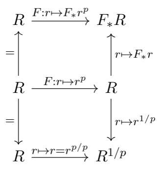
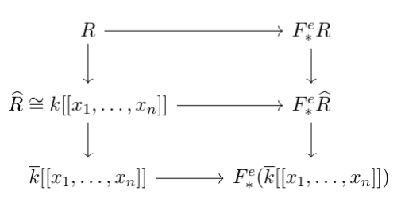

Math 918, Spring 2026: F-Singularities
Course Documents
Here are the two general references for the course.- Linquan Ma & Thomas Polstra's F-Singularities: A Commutative Algebra Approach; called [MP] in the daily update.
- Alessio Caminata & Alessandro de Stefani's Notes for course on F-singularities; called [CdS] in the daily update.
- An additional resource is Karl Schwede & Karen Smith's Singularities defined by the Frobenius map; however note that this book requires more knowledge of algebraic geometry than is covered by the prereqs of this course, so I will not be explicitly suggesting it as complementary reading (even though their order of topics matches ours most closely!).
Office Hours: Mon 1:30-2:30 and Thurs 12:30-1:30. Or stop by my office when my door is open.
on MONDAY 04/27: Office hours moved to AFTER the RTG seminar (i.e., 3:30-4:30) so that I can watch the Math in the City presentations. I will also be around my office all afternoon prior to the presentations, so feel free to stop by between noon-ish and 1:30pm as well
Homeworks
- Homework 1: [PDF] and [TeX] + [math-hw.sty] (style file needed to compile!)
- Due on Friday Feb 6th at midnight. Submit on Gradescope.
- [Solution] to HW1.
- Homework 2: [PDF] and [TeX] + [math-hw.sty] (style file needed to compile! same as last week)
- Due on Friday Feb 20th at midnight. Submit on Gradescope.
- Homework 3: [PDF] and [TeX] + [math-hw.sty] (style file needed to compile! same as last week)
- Due on Friday March 6th at midnight. Submit on Gradescope.
- Homework 4: [PDF] and [TeX] + [math-hw.sty] (style file needed to compile! same as last week)
- Due on Friday March 28th at midnight (three weeks because of spring break!). Submit on Gradescope.
- Homework 5: [PDF] and [TeX] + [math-hw.sty] (style file needed to compile! same as last week)
- Due on Saturday April 11th at midnight. Submit on Gradescope.
- Homework 6: [PDF] and [TeX] + [math-hw.sty] (style file needed to compile! same as last week)
- Due on Friday May 1st at midnight (three weeks due to late release!). Submit on Gradescope.
In-Class Handouts
- 02/03 Worksheet: [Fedder's Criterion]
- 02/05 Cheatsheet: [Macaulay2 Cheatsheet]
HCC Info
You have access to the Holland Computing Center (HCC) for this class! To use these resources, you will need an account associated with HCC that is separate from your University of Nebraska account and credentials:
- If you need an HCC account: https://hcc.unl.edu/new-user-request and request the math918 group.
- If you already have an HCC account from a prior class or research, you can add the class group to your account or move your account to the math918 group: https://hcc.unl.edu/group-addchange-request.
Note: Not actually required to add/change group! ANY access to HCC is good enough for us. But you're still welcome to join the class group if you e.g. want to keep class access separate from research access for some reason.
**You will need to activate your DUO two factor for your HCC account in order to use the resources. Without this you will not have access! This is different from the TrueYou DUO you use to log into other UNL services.**
Here is some other important info:
- For more useful links and notes for students taking a class using HCC resources, please see https://hcc.unl.edu/docs/faq/class_students.
- While using HCC resources for this class, be aware of HCC's class account guidelines and center's policies: https://hcc.unl.edu/hcc-policies.
- Pay special attention to the guidelines for class accounts since data is removed at the end of the semester: https://hcc.unl.edu/hcc-policies#class-groups
Daily Update
Use this table of contents list to jump to a specific day. Info for future classes is a tentative plan, and will be updated by the day after the class with what actually happened.
- Jan 13
- Basics & Notation: Day 1
- Jan 15
- Basics & Notation: Day 2
- Jan 20
- Completions and Proof of Kunz's theorem
- Jan 22
- Finishing proof of Kunz's theorem + starting F-splitting
- Jan 27
- Proof that F-splitting can equivalently be checked for some/any $e$; examples (including F-finite regular local rings); the statement of Fedder's criterion; viewing $\hom_S(F_*^eS,S)$ as a rank 1 free module for regular $S$.
- Jan 29
- A HW correction; fact about the generating $\Phi$ and ideal containments; more general statement of Fedder's criterion.
- Feb 03
- F-splitting localizes; the F-split locus is open; the completion of Fedder.
- Feb 05
- We learned some M2 basics (everything needed to do Fedder's criterion) and also learned how the HCC works.
- Feb 10
- Defined (eventual) splitting along elements and SFR. Proved that local + SFR implies domain, and that F-finite regular local rings are SFR.
- Feb 12
- Fedder examples; proof that if $R$ is SFR then so is $R_{\mf p}$.
- Feb 17
- Proof that if $R_{\mf p}$ is SFR for all $\mf p$, then $R$ is SFR; proved that all F-finite regular rings are SFR; stated that for SFR rings all module-finite extensions split and started proof.
- Feb 24
- Finishing up Ch 3 of [MP]: finishing the above proof; doing the "test element" criterion that reduces checking SFR-ness to checking eventual F-splitting along a single (well-chosen) $c$, + a reminder of the Jacobian criterion for smoothness and how to use it to choose a good $c$.
- Feb 26
- Solutions to exercises on computing which of four rings $R$ were SFR; starting local cohomology.
- Mar 03
- More local cohomology basic properties + an example. (Proofs under construction
- Mar 05
- More local cohomology basic properties + a proof of the local cohomology characterization of Cohen-Macaulayness + defining the Frobenius action (Proofs under construction)
- Mar 10
- Matlis duality, its application to local cohomology (called local duality), and proving that for a complete local regular ring, we can detect the dimension of a module by looking at which local cohomology module is the top non-vanishing one. We ended with a NON-example of an F-injective. Proofs under construction!
- Mar 12
- Saw how the non-example generalizes a little bit and saw how weak normality connects to the Frobenius action on $H^1$. We (vaguely) defined the word F-singularity. Ended by showing that SFR implies CM in the complete case, and proved/stated other facts that we'll be needed to extend from the complete case to the general case. (Notes complete!)
- Mar 24
- Put everything from Mar 12 together to see why ALL SFR rings (which for us are all F-finite) are CM. Then we'll define F-rational as our last class of F-singularities, and see how F-rational fits into our singularity picture.
- Mar 26
- F-injective behaves well under deformation; and using this to see an example of an F-injective ring that is not F-split.
- Mar 31
- Starting applications of F-singularities! Combinatorics application to magic squares (and some general facts about the Hilbert polynomial).
- Apr 02
- Reduction to char p: Hochster-Roberts theorem that a subring of a polynomial ring with a "contracted" sop is a CM ring, statements of generic freeness.
- Apr 07
- Wrapping up reduction to char p---Hochster's meta-theorem + a "style of result" and some examples when it is actually true. Start of F-finiteness: partial proof that F-finite rings are excellent, + the "almost" converse; F-finite rings are quotients of F-finite regular rings,
- Apr 09
- Saw (without proof) an example of a regular but non F-finite ring which fails many of our earlier properties of regular rins. Start of F-purity! Definion of pure, F-pure, + some basic statements.
- Apr 14
- Finished F-purity, including proving the injective hull criterion for checking purity, and saw that for F-finite rings, R is F-pure iff it is F-split. Defined tight& Frobenius closure.
- Apr 16
- Test elements (for tight closure), tight closure of graded ideals, and a bunch of examples
Under construction! - Apr 21
- Frobenius closure commutes with localization; tight closure does NOT commute with localization. Defined F-regular and weakly F-regular; saw how closure operations (tight/Frobenius on all/parameter ideals) relate to the four F-singularities. In some cases we got an exact characetrization; in some cases only one direction.
- Apr 23
-
Wrapped up tight closure: colon capturing, persistence, the char p version of Hochster-Roberts, and big balanced CM algebras. Stated Peskine-Szpiro vanishing (finite pd implies Tor's against $F_*^eR$ vanish) and proved the acyclicity lemma.
Still under construciton! - Upcoming
- Finish proof of Peskine-Szpiro vanishing, statements and (maybe?) some proofs related to Herzog's partial converse as well as Rodicio's theorem.
Jan 13
Big Assumptions (for all semester!): p = a prime number; q = a power of p; all rings are unital, commutative, and noetherian. For a very long time (up until reduction to char p), all rings are characteristic p.
We covered the beginning of Ch 1 of [CdS], up through and including Remark 1.8. (See also very first section of [MP].) Useful fact: In a reduced (char p) ring, when p-th roots exist, they are unique!
We also concretely looked at $R^{1/p}$ and $F_*R$ in the concrete example where $R=\mathbb F_2[x]$, and saw how these are generated (as $R$-modules) by $\{1,\sqrt x\}$ and $\{1,F_*x\}$, respectively. We saw more generally that when $R= \mathbb F_p[x_1,\ldots, x_n]$, that $F_*R$ is generated by $\{F_*(x_1^{a_1}\cdots x_d^{a_d})\: | \: 0\leq a_i \lt p\}$. We even saw that this generating set is actually a basis! Finally, the following commutative diagram showed us that all three perspectives are really "the same" map. Note that all vertical maps are isomorphisms/equalities, the horizontal maps are all different ways of writing the Frobenius, and the whole bottom row only makes sense when $R$ is reduced.

Jan 15
Defined a separable polynomial and a perfect field (Ref: Section 15.5 of Eloísa's Math 818 notes). In particular, a char $p$ field is perfect if and only if $F$ is a surjection. $K=\mathbb F_p(T)$ is a non-perfect field example. We stated #5 below as a bonus problem (but originally stated it wrong! I meant to say $R^p$ not $R^{1/p}$, my apologies).
We then worked for a while on questions #1-4, and went over the answers to #1-3:
- Describe the $R$-module structure of $F_*R$ when $R=\mathbb F_p[x,y]/\langle xy\rangle$.
Generators are $\{F_*x^i, F_*y^i\: | \: 0\le i \lt p\}$. I.e., the same as for the polynomial ring, but we remove all the ones corresponding to the cross terms that are already zero in this quotient ring.
Relations are $yF_*x^i = 0$ and $xF_*y^i=0$.
- Describe the $R$-module structure of $F_*R$ when $R=\mathbb F_2[x^2,x^3]\subset \mathbb F_2[x]$.
Generators are $\{F_*1, F_*x^2, F_*x^3, F_*x^5\}$. Notice that the monomials in $R$ are every power of $x$ EXCEPT for $x$ itself. So via taking $x^aF_*x^b = F_*x^{2a+b}$ for $b\in \{0,2,3,5\}$, we see that even just $F_*x^{2a+2}$ and $F_*x^{2a+3}$ cover all possible powers $\ge 6$. The only other seemingly missing monomial is $F_*x^4$, but $F_*x^4 = x^2F_*1$.
Relations are $\begin{aligned} x^3F_*1 &= x^2 F_*x^2 & x^3F_*x^3 &= x^2F_*x^5 \\ x^4F_*1 &= x^3F_*x^2 & x^4F_*x^3 &= x^3F_*x^5\end{aligned}$.
- Describe the $R$-module structure of $F_*R$ when $R=\mathbb F_3[x,y]/\langle y^2-x^3-x\rangle$.
Generators are $\{F_*1,F_*x,F_*y\}$. Clearly the 9 monomials $\{F_*x^iy^j\: | \: 0\le i,j\lt 3\}$ would suffice as a generating set, so now we'll show that the other 6 of them are actually redundant via taking multiples of our defining equation. As we go down the list, we will only use higher up monomials to get the lower ones.
- $F_*y^2 = xF_*1 + F_*x$ (via original equation)
- $F_*xy = yF_*1 - xF_*y$ (via $\cdot y$)
- $F_*xy^2 = yF_*y - xF_*y^2$ (via $\cdot y^2$)
- $F_*x^2 = F_*xy^2 - xF_*x$ (via $\cdot x$)
- $F_*x^2y^2 = xF_*x^2 + xF_*1$ (via $\cdot x^2$)
- $F_*x^2y = yF_*x - xF_*xy$ (via $\cdot xy$)
There are no relations!
- Describe the $R$-module structure of $F_*R$ when $R=\mathbb F_p(T)[x]$.
Generators are $\{F_*(T^jx^i)\: | \: 0\le i,j\lt p\}$. No relations!
Notice that $TF_*x^i = F_*(T^px^i)$. So if we had only used the generators from the perfect field case, we would be missing being able to write an element like $F_*T$. Or said another way, previously in the perfect case we knew that if we wanted to write $F_*(ax)$, we could always pull out the $a$ via taking a $p$-th root, so that $F_*(ax) = a^{1/p}F_*x$. But if the Frobenius isn't surjective, we can't do that anymore!
- Give an example of a ring $R$ where $R^{p}$ is NOT isomorphic to $F_*R$. In other words, an example where the inclusion $R^p\hookrightarrow R$ is NOT the same map as the Frobenius. [Corrected typo from earlier statement: I wanted $R^p$ not $R^{1/p}$!]
We then noticed a pattern: drawing the corresponding varieties for the two ``free'' examples gave us affine space (the polynomial ring) and a smooth elliptic curve (#3). Drawing the two ``non-free'' examples gave us two lines crossing (#1) and a cuspidal cubic (#2).
Definition 2.1: The ring $(R,\mathfrak m, k)$ is a regular local ring if $\dim R = \dim_k \mathfrak m /\mathfrak m^2$. In other words, if the Krull dimension = the embedding dimension.
A ring $R$ is a regular ring if $R_{\mathfrak m}$ is a regular local ring for every maximal ideal $\mathfrak m$.
You will eventually learn a lot more about regular rings in Math 906.
Kunz's Theorem: $R$ is regular if and only if the Frobenius is flat.
Definition 2.3: $R$ is F-finite if $F_*R$ is a finitely generated $R$-module.
For a local ring and a finitely generated module $M$, you already know that $M$ is flat if and only if it is free. This and our new definition give us an immediate corollary to Kunz.
Corollary 2.4: Let $(R,\mathfrak m)$ be an F-finite local ring. Then $R$ is regular if and only if $F_*R$ is free.
Jan 20
Some facts (that became exercises):
-
Prove that $F$ induces an isomorphism on Spec.
The induced map on Spec takes a prime ideal $Q$ to $F^{-1}(Q)$. If $r\in Q$, then $r^p=F(r)\in Q$ and thus $r\in F^{-1}(Q)$. Conversely, if $r\in F^{-1}(Q)$ this means $r^p\in Q$, but $Q$ is prime so $r\in Q$.
- Prove that $F_*^e$ is an exact functor. (In particular, we first saw what it does to maps and to modules: just throws an $F_*^e$ decoration in front!)
See proof of Prop 1.10(1) in [CdS].
- If $W\subset R$ is a multiplicative set, then $W^{-1}(F_*^eR)\to F_*^e(W^{-1}R)$ via $\frac{F_*^e r}{w}\mapsto F_*^e(\frac{r}{w^{p^e}})$ is a $W^{-1}R$-module isomorphism.
See proof of Prop 1.10(2) in [CdS].
Definition 3.1: A sequence $(r_n)_{n\in \mathbb N}$ in $R^{\mathbb N}$ is Cauchy in the $I$-adic topology if for all $t\in \mathbb N$ there exists a $d\in \mathbb N$ such that for $n,m\geq d$, we have $r_n-r_m\in I^t$. Let $C_I(R)$ be the set of Cauchy sequences. Let $C^0_I(R)$ be the sequences convernging to zero, i.e., s.t. for all $n$ there exists $m$ s.t. for all $i\geq m$, $r_i\in I^n$.
Facts/Definition 3.2: $C_I(R)$ is a ring and $C^0_I(R)$ is an ideal; the completion is $\widehat R^I = C_I/C_I^0$. We're going to only use this for local rings and the $I=\mathfrak m$ case, written just plain $\widehat R$, which satisfies:
- $\widehat R$ is a local commutative unital noetherian ring
- Completion at $\mathfrak m$ is faithfully flat
- $R$ is regular if and only if $\widehat R$ is regular.
- (Cohen Structure Theorem, equicharacteristic case) Suppose $(R,\mathfrak m,k)$ is a complete local ring containing a field. Then $R\cong k[[ x_1,\ldots, x_n]]/I$. Further, $R$ is regular if and only if $R\cong k[[x_1,\ldots, x_d]]$.
Proof of Kunz's theorem (regular implies flat):
$R$ is regular iff $R_Q$ is regular for all $Q$; and a map $\phi$ is flat iff $\phi_Q$ is flat for all $Q$. Further, $F_*^e$ commutes with localization. Thus we reduce to the local case. Now consider

Recall fact: In such a diagram (where both vertical maps are faithfully flat), if the bottom map is flat then so is the top one. So sufficient to show for the complete case, and likewise sufficient to do for a power series ring over an algebraically closed field, but we (basically) already did that! ■
We started the proof of the other direction (in the style of [CdS]) but didn't finish; however we did get through the following:
Definition 3.3: Let $(R,\mathfrak m)$ local. Then $x_1,\ldots, x_n$ is Lech independent if having $a_1x_1+\cdots + a_nx_n=0$ for $a_i\in R$ in fact implies that $a_i \in \langle x_1,\ldots, x_n\rangle$ for all $i$.
Equivalently: letting $\mathfrak q = \langle \underline x\rangle$, they are Lech independent iff they minimally generate $\mathfrak q$ and $\mathfrak q/\mathfrak q^2$ is a free $R/\mathfrak q$-module.
Lech's Lemma: Let $(R,\mathfrak m)$ be a local ring and $x_1,\ldots, x_n$ be Lech independent elements which generate an $\mathfrak m$-primary ideal. If $x_1=y_1z_1$ then \[\ell_R(R/\langle x_1,\ldots, x_n\rangle)=\ell_R(R/\langle y_1,\ldots, x_n\rangle) + \ell_R(R/\langle z_1,\ldots, x_n\rangle)\]
Proof in Lemma 2.6 of [CdS]
Jan 22
Proposition 4.1: If $\underline x\in R$ is Lech independent and $\varphi:R\to S$ is a flat map, then $\varphi(x_1),\ldots, \varphi(x_n)$ is Lech independent in $S$.
Proof: Let $I=\underline x$. Then by Lech independence, $I/I^2 \cong (R/I)^n$ as $(R/I)$ and as $R$-modules. But then flatness gives \[ (IS)/(IS)^2 \cong (S/IS)^n \] and by rank reasons clearly $\varphi(\underline x)$ is still a minimal generating set. ■
Proposition 4.2: If $\underline x$ is Lech independent and $x_1=y_1z_1$ then $y_1,\ldots, x_2,\ldots, x_n$ is L.i.
Proof: From last time, we saw that $\underline x : y_1 = \langle z_1,x_2,\ldots, x_n\rangle$. So suppose we have coefficients $a_1z_1 + \sum_{i=2}^n a_ix_i=0$. Multiply by $y_1$ to get $a_1(y_1z_1)+\sum_i (a_iy_1)x_i=0$. By Lech independence of $\underline x$, this means $a_1 \in \underline x \subset \langle z_1,x_2,\ldots, x_n\rangle$. Further, means $a_i \in \underline x:y_1 = \langle z_1,x_2,\ldots, x_n\rangle$ as desired. ■
Proof of Kunz's theorem (flat => regular): $R$ is regular if and only if $\widehat R$ is regular, and by the same diagram before, if $F_*\widehat R$ is a flat $\widehat R$ module then $F_*R$ is a flat $R$-module. (In fact, this is iff because $\widehat R\to \widehat{F_*R}$ is canonically $\widehat R\to F_* \widehat R$.) So WLOG $R$ is complete local ring, and $R\cong k[[x_1,\ldots, x_n]]/I$. Let $S=k[[x_1,\ldots, x_n]]$.
We can further WLOG assume $n =$ embedding dimension (recall that = $\dim_k\mathfrak m / \mathfrak m^2$ = by NAK the minimal number of generators of $\mathfrak m$), since if not just throw away redundant $x$'s. Thus $\underline x$ is Lech independent, and so is $\underline x^{[q]}$, and then also so is $x_1^{a_1},\ldots, x_n^{a_n}$ for combo of powers.. On the one hand, by Lech's length lemma, a base case of $\ell(R/\mathfrak m)=1$, and induction, we get that $\ell_R(R/\langle x_1^{a_1},\ldots, x_n^{a_n}) = \prod_i a_i$. But we also can do the same thing to $S$ and see that $\ell_S(S/\langle x_1^{a_1},\ldots, x_n^{a_n}) = \prod_i a_i$.
Thus $S/\langle \underline x\rangle^{[p^e]}\to S/(I+\langle \underline x\rangle^{[p^e]}\cong R/\mathfrak m^{[p^e]}$ is an isomorphism for all $t$, and so $I\subset \underline x^{[q]}$ and by Krull's intersection, $I=0$. ■
Now... new topic! Moving onto Frobenius splitting. We defined F-splitting, saw a proposition about how it relates to other split maps, and saw two examples.
Definition 4.3: $R$ is F-split if there exists some $R$-module map $\pi\in \operatorname{Hom}_R(F_*R,R)$ such that $\pi\circ F = \operatorname{id}_R$.
Equivalently: There exists an $R$-module map $\pi:F_*R\to R$ such that $\pi(F_*1)=1$.
We saw that was the same since being a splitting exactly means that for all $r\in R$ we have $r = \pi\circ F(r) = \pi(F_*r^{p})=\pi(rF_*1)=r\pi(F_*1)$.
Proposition 4.4: If $R$ is F-split then $R$ is reduced.
Proof: Let $\pi:F_*R\to R$ be our splitting. If $\pi\circ F=\operatorname{id}_R$, this forces the first map to be injective. And we saw $F$ injective iff $R$ reduced. ■
Example 4.5: If $R=k[x]$ or $k[[x]]$ then $R$ is F-split. We saw that in fact these examples are both free, with $R$-basis of $\{F_*x^i\: | \: 0\le i \lt p\}$. By freeness, we can define a map by doing whatever we want on the generators, such as the standard monomial splitting, which sends \[F_*1\mapsto 1, \qquad F_*x^i\mapsto 0\ \ \forall 0\lt i\lt p.\]
Proposition 4.6: Suppose $\varphi:R\to S$ is split (as an $R$-module map). If $S$ is F-split then so is $R$.
Proof: Suppose that $\varphi$ is split via $\gamma:S\to R$, and that $F_S$ is split via $\pi:F_*S\to S$. Then $\gamma\circ\pi\circ (F_*\varphi)$ is our desired splitting of $F_R$. See this via \[\gamma\circ\pi\circ (F_*\varphi)(F_*1) = \gamma\circ \pi(F_*\varphi(1)) = \gamma(\pi(F_*1))=\gamma(1)=1.\quad ■\]
Example 4.7: Let $G$ be a finite group such that $p\not|\,|G|$. Let $R$ be a char $p$ ring with a $G$ action, and let \[R^G = \{r\in R \: | \: g\cdot r = r \ \forall g\in G\}\] be the invariant subring. The inclusion $R^G\to R$ is always split via the Reynold's operator: \[R\to R^g\qquad r\mapsto \frac{1}{|G|}\sum_{g\in G}g\cdot r\] Thus whenever $R$ is F-split, the invariant ring $R^G$ is also F-split.
As a more specific example, take $G=S_3$ and $R=\mathbb F_p[x_1,x_2,x_3]$. Have $G$ act on $R$ via $\sigma\cdot f(x_1,x_2,x_3) = f(x_{\sigma(1)},x_{\sigma(2)},x_{\sigma(3)})$. Examples of polynomials in $R^G$ are $x_1x_2x_3$ and $x_1+x_2+x_3$, but NOT plain old $x_1$ or plain old $x_1x_2$. Using the previous polynomial example and the above invariant example, we see that if $p\ge 5$ then $R^{S_3}$ is F-split.
Today's class prompted some good requests for examples, which I will give you on Tuesday:
- What's an example of a reduced ring that is NOT F-split?
- What's an example of an invariant ring that is F-split even though $p||G|$?
Finally, an in-class exercise was to prove the following, which we will go over on Tuesday:
Proposition 4.8: The following are equivalent for a char $p$ ring $R$.
- $R$ is F-split.
- There exists some $e\gt 0$ such that $F^e:R\to F_*^eR$ splits.
- For all $e\gt 0$ the map $F^e:R\to F_*^eR$ splits.
Jan 27
Proof of Proposition 4.8 from last week (F-split iff for some e iff for all e): 1 implies 3: If $\pi:F_*R\to R$ is our splitting, then notice that $\pi\circ F_*\pi \circ \cdots \circ F_*^{e-1}\pi:F_*^eR\to R$ is a splitting! Notation $\pi^{\star e} =$ such a composition, and in fact $\psi\star \phi := \psi\circ F_*^e\phi$.
3 implies 2: clear
2 implies 1: let $\pi:F_*^eR\to R$ be our splitting. Then \[ R \stackrel{F}{\to} F_*R \stackrel{F_*F^{e-1}}{\to} F_*^eR \stackrel{\pi}{\to} R \] so take $\pi \circ F_*F^{e-1}$ as our splitting. ■
(Non)Example 5.1: The ring $\mathbb F_2[x^2,x^3]$ is reduced, but is NOT F-split. (Proved in HW 1 #4).
Example 5.2: Here are some invariant rings that ARE F-split even though $p$ divides the order of the group (so that the Reynold's operator proof won't work):
- If $G$ acts via the trivial action, then for ANY ring $R$ we have $R^G=R$. So regardless of the group order, if $R$ is F-split then clearly so is $R^G$.
- If $G=S_2$ and $R=\mathbb F_2[x,y]$ and we do the same symmetric group action of permutating the variables from last time. Then $R^G = \mathbb F_2[x+y,xy]\cong \mathbb F_2[w,z]$ which is regular and thus F-split.
The following theorem was an in-class exercise.
Theorem 5.3: Any F-finite regular local ring is F-split. Any complete regular local ring is F-split.
By the Cohen structure theorem, if $R$ is a complete regular local ring then $R\cong k[[x_1,\ldots, x_d]]$ where $k$ is the residue field. From seeing this example before we know that $F_*R$ is free (though possibly infinitely generated if $k$ is a bad field!), that $F_*1$ is part of a basis, and so the standard monomial splitting works. Recall the standard monomial splitting sends $F_*1\mapsto 1$ and $F_*(\lambda_i x^{\alpha})\mapsto 0$ for all the other generators. ■
By Kunz, regular means $F_*R$ is flat. Since we're further F-finite and local, $F_*R$ is free. So as long as we can prove that $F_*1$ is part of a minimal generating set (i.e., part of a basis) we can do the same thing as above and construct a map that sends $F_*1$ to $1$ and the other generators to wherever we want. To check this use NAK! $F_*1$ is part of a minimal generating set if and only if $F_*1$ is non-zero in $F_*R/\mathfrak mF_*R$. By definition we can simplify $\mathfrak F_R= F_*\mathfrak m^{[p]}$, and clearly $F_1 \notin F_*\mathfrak m^{[p]}$. Thus we can extend to a minimal generating set (=free basis). ■
WARNING: It is NOT true that every regular local ring is F-split; we really do need some adjectives! We will see an example later in the semester.
Fedder's Criterion: Let $S$ be an F-finite regular local ring, and let $R=S/I$. Then $R$ is F-split if and only if $I^{[p]}:I\not\subseteq \mathfrak m^{[p]}$
It's stated there for motivation but it will take us a while to prove it. First we want to have a good understanding of what $\hom_S(F_*^eS,S)$ looks like, and how it relates to $\hom_R(F_*^eR,R)$. This will then help us figure out how a potential splitting of the Frobenius on $R$ might relate to one on $S$.
Remark 5.5: If $T$ is an $R$-algebra, then $\hom_R(T,R)$ has the structure of a $T$-module via premultiplication: $(t\cdot \varphi)(s) = \varphi(ts) $. So, $\hom_R(F_*^eR,R)$ has the structure of an $F_*^eR$-module via premultiplication: $(F_*^er \cdot \varphi)(F_*^es) = \varphi(F_*^e(rs))$.
Proposition 5.6: Let $k$ be an F-finite field, and let $S=$ either $k[x_1,\ldots, x_d]$, or the localization thereof at $\mathfrak m$, or $k[[x_1,\ldots, x_d]]$. Then $\hom_S(F_*^eS,S)$ is a free rank one $F_*^eS$-module. Specifically, if $\{F_*^e\lambda_i\}$ is a $k$-basis of $F_*^ek$ (where wlog $\lambda_1=1$), then $\Phi:F_*^eS\to S$ is our generator where $\Phi$ is defined on the monomial basis to be \[ \Phi(F_*^e(\lambda_ix^{\alpha})) = \begin{cases} 1 & i=1,\ \textrm{and }\alpha_j = (p^e-1)\ \forall j\\ 0 & \textrm{else} \end{cases} \]
Proof (when $k$ is perfect): $k$ is perfect means we don't have to worry about the $\lambda_i$ (a similar proof works with them there it is just more annoying to type out but not any more interesting). Let $\pi_\alpha$ be the dual (projection) to $x^{\alpha}$, so that \[ \pi_\alpha(F_*^e(x^{\beta})) = \begin{cases} 1 & \alpha = \beta\\ 0 & \textrm{else} \end{cases}. \]
- Goal 1: Show that each $\pi_\alpha$ can be written as $F_*^es\cdot \Phi$ for some $s\in S$. (Hint: First notice that $\Phi$ itself is a $\pi_\alpha$, and then see what $F_*^ex\cdot \Phi$ looks like in terms of the $\pi_\alpha$'s, and see if you can figure out a pattern.)
Let 𝟙 denote the all 1's vector. So $\Phi = \pi_{(p^e-1)𝟙}$, and more generally we HAVE a map that sends exactly one monomial to 1 (and the rest to 0), and we WANT maps that send exactly one monomial to 1 (and the rest to 0). So we should try acting by monomials. Specifically, \[F_*^e(x^{(p^e-1)𝟙-\alpha})\cdot \Phi (F_*^ex^{\beta}) = \Phi(F_*^e x^{(p^e -1)𝟙-\alpha+\beta}) = \begin{cases} 1 & (p^e-1)𝟙 - \alpha+\beta = (p^e-1) 𝟙 \\ 0 & \textrm{else}\end{cases}.\] I.e., it equals one exactly when $\beta = \alpha$. So $F_*^e(x^{p^e𝟙 -1 -\alpha})\cdot \Phi = \pi_\alpha$. ■
Observation: This shows why we needed $\Phi$ to send the LARGEST generator to zero. Otherwise the $x^{ (p^e-1)𝟙 -\alpha}$ we are acting by would have had the $(p^e-1)𝟙$ replaced by something smaller, and so the whole exponent would have been negative sometimes (bad because we're in a polynomial/power series ring).
- Goal 2: Show that the $\pi_\alpha$ generate $\hom_S(F_*^eS,S)$ as an $F_*^eS$ algebra.
Consider a map $\psi:F_*^eS\to S$. If we build a map that agrees with $\psi$ on the generators $x^\alpha$ then we're done. So define our candidate map \[\varphi= \sum_\alpha F_*^e(\psi(x^\alpha))^{p^e} \cdot \pi_\alpha \] which ensures \[\varphi(F_*^e(x^\beta)) = \sum_\alpha( F_*^e(\psi(x^\alpha)^{p^e}) \cdot \pi_\alpha)(F_*^ex^\beta) = \sum_\alpha \pi_\alpha(F_*^e(\psi(x^\alpha)^{p^e}x^\beta)) = \sum_\alpha \psi(x^\alpha)\pi_\alpha(F_*^ex^\beta) = \psi(x^\alpha)\pi_\alpha(F_*^ex^\alpha) = \psi(x^\alpha)\] as desired. Notice the magic that happened here---our action only allows us to act via pre-multiplication. However, by acting by a $p^e$-th power of an element, we get the same answer as if we acted by post-multiplication! In other words, the usual fact that the $\pi_\alpha$ generate as an $S$-basis (by typical dual basis fact) is also why we're getting that these generate over $F_*^eS$. ■
Now clearly combining Goal 1 and Goal 2 we see that $\Phi$ generates. For freeness, the only possible relation is of the form $F_*^es \cdot \Phi=0$. But this can never happen---$\Phi$ is non-zero on monomials of arbitrarily large degree! ■
Jan 29
Remark 6.1: In fact, $\hom_S(F_*^eS,S)$ is a free rank one $F_*^eS$ for any Gorenstein local ring $S$ (in particular, for any regular local ring). See Remark 5.9 of [CdS] for a proof. We'll use the regular case of this statement to be able to the following results for any regular local ring, not just polynomials/power series.
Proposition 6.2: Let $S$ be an F-finite regular local ring and let $\Phi$ be the generator of $\hom_S(F_*^eS,S)$. Let $I$ and $J$ be ideals of $S$. Then \[ \Phi(F_*^eJ)\subset I \iff J\subset I^{[p^e]} \]
Proof: If $J\subset I^{[p^e]}$, then in fact for ANY map $\psi\in \hom_S(F_*^eS,S)$ we have \[ \psi(F_*^eJ)\subset \psi(F_*^eI^{[p^e]}) \subset I\psi(F_*^eS)\subset I. \] For converse, first make several observations: By Kunz $F_*^eS$ is free over $S$, with basis $\{F_*^eg_i\}_{i=1}^t$. Let $\{\pi_i\}_{i=1}^t\subset \hom_S(F_*^eS,S)$ be the dual basis (recall: this means $\pi_i(F_*^eg_j)=1$ if $i=j$, otherwise $0$). Further, because $\Phi$ generates, there exist $s_i\in S$ s.t. $\pi_i = F_*^es_i \cdot \Phi$. And \[\id_{F_*^eS} = \sum_i \gamma_i \circ \pi_i,\] where here $\gamma_i$ is the $S$-module map $S\to F_*^eS$ which sends $1\mapsto F_*^eg_i$. (Notice: this is the same as taking the $e$-th Frobenius map $S\to F_*^eS$, and then composing with multiplication by $F_*^eg_i$).
Now since $\Phi(F_*^eJ)\subseteq I$, we see \[\pi_i(F_*^eJ) = (F_*^es_i \cdot \Phi)(F_*^eJ) =\Phi(F_*^e(s_iJ))\subseteq I\] and so further, \[ F_*^eJ = \id_{F_*^eS}(F_*^eJ) = \sum_i \gamma_i \circ \pi_i(F_*^eJ) \subseteq \sum_i \gamma_i(I) = \sum_i I\gamma_i(S)\subseteq I \] as desired. ■
Theorem 6.3: Let $S$ be an F-finite ring, $I$ an ideal, and $R=S/I$. Then there is a natural $F_*^eS$-module map \[\Psi:(F_*^e(I^{[p^e]}:I))\cdot \hom_S(F_*^eS,S)\to \hom_R(F_*^eR,R).\] If $S$ is regular, then this map is a surjection and the kernel is $F_*^e(I^{[p^e]})\cdot \hom_S(F_*^eS,S)$.
Proof: The natural map: Let $t\in I^{[p^e]}:I$ and $\varphi\in \hom_S(F_*^eS,S)$. Given $r+I\in S/I=R$, we ideally want the resulting map on $\hom_R(F_*^eR,R)$ to have $F_*^e(r+I)\mapsto (F_*^et\cdot \varphi)(F_*^er) + I$. This will work! To check it is in $\hom_R(F_*^eR,R)$ we only need to check well-definedness, i.e., that things in $F_*^eI$ are sent to things in $I$. Sosuppose we have some $j\in I$. Then \[(F_*^et\cdot \varphi)(F_*^ej) = \varphi(F_*^e(jt))\in \varphi(F_*^e(I^{[p^e]}) = I\varphi(F_*^eS) \subset I.\] And by design, the overall map $\Psi$ is an $F_*^eS$-module map.
Surjectivity in the regular case: Since $S$ is regular we have $F_*^eS$ flat (by Kunz). Since $S$ also F-finite, we further have $F_*^eS$ a projective $S$-module. Thus ANY map $\theta\in \hom_R(F_*^eR,R)$ can be lifted to $\Theta\in\hom_S(F_*^eS,S)$ (using that the projection map $\rho:S\to R$ is surjective). By our knowledge of $\hom_S(F_*^eS,S)$, we can write $\Theta = F_*^es \cdot \Phi$. To finish surjectivity, it will suffice to check that $s\in I^{[p^e]}:I$. But by virtue of the fact that $\Theta$ descends, \[I\supset \Theta(F_*^eI) = \Phi(F_*^e(sI)).\] Now by the Proposition above, $sI\subset I^{[p^e]}$, thus $s\in I^{[p^e]}:I$.
Kernel in the regular case: A map $F_*^et\cdot \varphi\in F_*^e(I^{[p^e]}:I)\cdot \hom_S(F_*^eS,S)$ is in the kernel if it descends to the zero map, which happens exactly when $(F_*^et\cdot \varphi)(F_*^eS) = \varphi(F_*^e(tS))\subset I$. Now use the Proposition again, further writing $\varphi = F_*^es\cdot \Phi$, so that $\Phi(F_*^e(stS))\subset I$ and so $stS \subset I^{[p^e]}$. Thus $st\in I^{[p^e]}$, and we've shown that $F_*^et\cdot \varphi = F_*^e(st)\cdot \Phi$ is in $F_*^e(I^{[p^e]})\cdot \hom_S(F_*^eS,S)$ as desired. ■
The following theorem has been restated for clarity. (It was still true as stated in class though!)
Theorem 6.4: Let $S$ be an F-finite ring, $I$ an ideal, and $R=S/I$. Let $\mf q\in \bb V(I)\subset\Spec(S) $ be a prime ideal of $S$ that corresponds to a prime ideal in $R$. Then $R_{\mf q}$ is F-split if and only if (for any fixed $e$) \[(I^{[p^e]}:I)\not\subseteq \mf q^{[p^e]}.\]
Proof is promised for February 3rd!
Proof of Fedder's criterion ($I^{[p^e]}:I\not\subseteq \mf m$ version from Jan 27) using the above: Let $(R,\mf m)$ be our local ring. By the Lemma from Feb 3rd, $R$ is F-split if and only if $R_{\mf m}$ is F-split, i.e., $R$ is F-split at $\mf m$. By the above Theorem, this is if and only $(I^{[p]}:I)\not\subseteq \mf m^{[p]}$, as desired. ■
Feb 3rd
Today had a worksheet: [Fedder's Criterion]
Finishing the proof of the (more general) Fedder's criterion, including some necessary lemmas. Hopefully some examples. Also, set up an HCC account by Thursday if you want to follow along with the demo!
The following results will appear as exercises, in addition to a few more examples (squarefree monomial ideals?)
Lemma 7.1: If there exists a map $\pi:F_*^eR\to R$ such that $\pi(F_*^ed)=1$, and $c|d$ in $R$, then there exists a map sending $F_*^ec\mapsto 1$. In particular, if there is ANY surjective map $F_*^eR\to R$ then $R$ is F-split.
Write $d=cc'$, and let $\gamma':F_*^eR\to F_*^eR$ be the ``times $F_*^ec'$ map''. Then $\pi\circ \gamma'$ is our desired map, because it has $F_*^ec\mapsto F_*^e(cc')=F_*^ed \mapsto 1$.
The in particular follows since we can always choose $c=1$. ■
Lemma 7.2: Let $\ev_d:\hom_R(F_*^eR,R)\to R$ be the "evaluation at $F_*^ed$" map, so that $\ev_d(\varphi) = \varphi(F_*^ed)$. Then there exists a map $\pi\in \hom_R(F_*^eR,R)$ such that $\pi(F_*^ed)=1$ if and only if $\ev_d$ is surjective.
Since the codomain of $\ev_d$ is a free rank one $R$-module, being surjective is equivalent to having $1$ in the image. But this is then equivalent to saying there exists a $\pi$ such that $\ev_d(\pi)=\pi(F_*^e1)=1$. ■
Lemma 7.4: The following are equivalent for map $\varphi:M\to N$ of $R$-modules:
- $\varphi$ is surjective.
- $\varphi^{-1}R$ is surjective for all multiplicative sets $W$.
- $\varphi_{\mf p}$ is surjective for all prime ideals $\mf p$.
- $\varphi_{\mf m}$ is surjective for all maximal ideals $\mf m$.
Proof: A map is surjective iff its cokernel is zero, i.e., iff $N/\im(\varphi))=0$. And checking if a module is zero localizes! More specifically, for (1) equivalent to (2), we know that $\varphi$ is surjective iff $N/\im(\varphi)=0$ iff $W^{-1}(N/\im(\varphi))=0$ for all multiplicative $W$. Since localization exact, $W^{-1}(N/\im(\varphi)) \cong (W^{-1}N)/(W^{-1}\im(\varphi))$. Further, note that $W^{-1}\varphi$ (i.e., the map where $m/w\mapsto \varphi(m)/w$) has image = $W^{-1}\im(\varphi)$. Thus in fact $W^{-1}(N/\im(\varphi))\cong (W^{-1}N)/\im(W^{-1}\varphi)$, and this is zero iff $W^{-1}\varphi$ is surjective.
The arguments for (1) iff (3) and for (1) iff (4) follow similarly. ■
Proposition 7.5: The following are equivalent for any F-finite ring $R$:
- $R$ is F-split.
- $W^{-1}R$ is F-split for all multiplicative sets $W$.
- $R_{\mf p}$ is F-split for all prime ideals $\mf p$.
- $R_{\mf m}$ is F-split for all maximal ideals $\mf m$.
Standard comm alg result (Eloísa's 905 notes, Lemma 5.26): If modules are finitely generated, then localization commutes with Hom. In particular, \[\begin{aligned} W^{-1}\hom_R(F_*^eR,R) &\cong \hom_{W^{-1}R}(W^{-1}F_*^eR,W^{-1}R) \\ &\cong \hom_{W^{-1}R}(F_*^e(W^{-1}R),W^{-1}R). \end{aligned} \] By Lemma 7.2, $R$ is F-split iff $\ev_1$ is surjective. By Lemma 7.4, this is iff $W^{-1}\ev_1$ is surjective for all $W$. By the above standard result, $W^{-1}\ev_1$ can be viewed as a map $\hom_{W^{-1}R}(F_*^e(W^{-1}R),W^{-1}R)\to W^{-1}R$, and in fact by tracing through the isomorphisms this is $\ev_1$ for $W^{-1}R$. Thus by Lemma 7.2 in reverse, $W^{-1}\ev_1$ is surjective iff $W^{-1}R$ is F-split$.
That completes the proof of (1) iff (2). The proofs of(1) iff (3) and of (1) iff (4) work the same. ■
Corollary 7.6: If $R$ is F-finite then the locus of F-split points is open, and is specifically equal to $\Spec R \setminus \bb V(\im( \ev_1))$.
Remark 7.7: The ``locus'' of F-split points is the set of points $\mf p$ on which $R$ is F-split. On Spec, points are prime ideals, and "being F-split at prime ideal $\mf p$ means that $R_{\mf p}$ is F-split. Finally, open means in the Zariski topology, where all open sets look like $U=\Spec R\setminus \bb V(J)$ for an ideal $J$.
The localization $R_{\mf p}$ is F-split if and only if $\ev_1$ localized at $\mf p$ is surjective, i.e., iff the cokernel $(R/\im(\ev_1))_{\mf p}$ is zero, i.e, iff $(\im(\ev_1))_{\mf p}=R$. That happens iff we inverted an element of the image, i.e., iff $\im(\ev_1)\not\subset \mf p$. By definition, this means $\mf p \notin \bb V(\im (\ev_1))$. ■
Lemma 7.3: Let $S$ be regular local F-finite, take $t\in I^{[p^e]}:I$ and let $\varphi=F_*^et\cdot \Phi$, where $\Phi$ is as usual the generator of $\hom_S(F_*^eS,S)$. Show that $\Psi(\varphi)$ (i.e., $\varphi$ viewed as a map on $S/I$) is surjective if and only if $t\notin \mf m^{[p^e]}$.
If $t\in \mf m^{[p^e]}$, then $\varphi(F_*^es) = \Phi(F_*^e(ts))\in \Phi(F_*^e(\mf m^{[p^e]})) = \mf m \Phi(F_*^eS) = \mf m$. In particular, we never hit $1$ in the image.
If $t\notin \mf m^{[p^e]}$, then our containment Proposition 6.2 from Jan 29 says $\Phi(F_*^e(tS))\not\subset\mf m$. Thus there is some $s\in S$ such that $\Phi(F_*^e(ts)) = \varphi(F_*^es) \notin \mf m$. Thus the image of $\varphi$ contains a unit, and so $\varphi$ is surjective. ■
Putting this all together... By the Theorem 6.3 on hom structure from Jan 29 (and by the fact that $I^{[p^e]}:I$ is an ideal), EVERY map in $\hom_R(F_*^eR,R)$ comes from a map of the form of Lemma 7.3. (See this because for any $t'\in I^{[p^e]}:I$ and $\gamma\in \hom_S(F_*^eS,S)$, we can write $\gamma = F_*^es \cdot \Phi$, and so $F_*^e(t')\cdot \gamma = F_*^e(t's)\cdot \Phi$. )
By Lemma 7.1, there exists a $\varphi$ which is surjective when descended to $R$ iff $R$ is F-split. By Lemma 7.3, this happens iff there exists a $t\in I^{[p^e]}:I$ which is $\notin \mf m^{[p^e]}$. In other words, iff $I^{[p^e]}:I\not\subset \mf m^{[p^e]}$. This (FINALLY!) completes the proof of Fedder's criterion, and in fact in a stronger way where we see we could've done some/any $e$ instead of just $e=1$. ■
Feb 5th
Today had a handout: [Macaulay2 Cheatsheet]
Macaulay2 (M2) related links
- Web Macaulay2: https://www.unimelb-macaulay2.cloud.edu.au/
- The Macauly2 Documentation: https://macaulay2.com/doc/Macaulay2/share/doc/Macaulay2/Macaulay2Doc/html/
- The M2 Zulip chat (Zulip is a chatroom kinda like slack or discord; this can be a useful place to go with code questions): https://macaulay2.zulipchat.com/
- The M2 GitHub (not needed for most people, but could be useful if you want to install on your personal laptop, or if you want to file a bug report or contribute to code!): https://github.com/Macaulay2/M2
- Advanced users: You can pass command-line arguments to a .m2 file run as a script using scriptCommandLine and value in your M2 code.
Holland Computing Cluster (HCC) related links
- Swan Open OnDemand (aka, the way to access the HCC through a browser): https://swan-ood.unl.edu/ . You know you set up your account correctly if you are able to login at that link!
- HCC documentation: https://hcc.unl.edu/docs/
- Guide to basic shell (aka terminal aka console) commands: https://hcc.unl.edu/docs/connecting/basic_linux_commands
- VERY advanced users: You can pass in command line arguments to an sbatch command via the instructions in this stackexchange post.
Running M2 on HCC in interactive mode
To run Macaulay2 on the HCC in interactive mode... First go to Swan Open OnDemand. Click the dropdown menu for "Clusters" (in the red bar on top), then click the only option which is Swan Shell Access. You're now in a black background, text-only shell! Then run the following three commands one-by-one (commands themselves in the numbered list, comments/context bulleted in underneath each):
- srun --pty --mem=10gb --qos=short $SHELL
- Before running this line, the "prompt" (place I'm typing) looks something like [username@login1.swan ~]$
- This command might take a minute or two to run, with messages saying something about being queued, waiting for resources, and/or having resources allocated. Once it has completed, your new prompt will look something like [username@c0000.swan ~]$
- What's going on here? srun= "slurm run", i.e., running a "real time" job using SLURM (what SLURM is doesn't matter, but it does mean a lot of commands start with s...).pty= a specific interface format.mem= an amount of memory. I wouldn't ever go less than 10gb even for a "small" job because even just opening M2 can take some space!qos= "quality of service", aka how the system decides priority (if more people want to run code RIGHT NOW than the system can handle, who gets to go first?). So short means we'll get cut off after 6 hrs, and it might be sooner if tons of people are also requesting short jobs.
- Before running this line, the "prompt" (place I'm typing) looks something like
- module load apptainer
- By default installed programs aren't actually accessible to you, you need to "module load" them first. For example, "module load python". Here, "apptainer" is a way to get weirder and more niche programs.
- apptainer exec docker://unlhcc/macaulay2 M2
- This starts up M2, including "installing" it. The first time you do it, it might take a while (for me it took under 10 minutes, but more than 5). However, it will cache the result in something called a SIF file to make future loads faster! So if you ever see output messages about using cached SIF files, that's usually a good thing :)
TADA! After this you should now be in M2 interactive mode.
Uploading Files to HCC
Easy way:
- Go to Swan Open OnDemand.
- Click the dropdown menu for "Files" (in the red bar on top), then select "Work (math918)". Note: You can also use the "Home Directory" button, however, code run from Work will be faster!
- The page now shows a list of files (or maybe is empty if it's your first time). In the upper right, there are some white and blue buttons. Use the blue Upload button to upload a new file (for example, the demo files from below).Or use "New File" to create a new file from scratch (for example, to copy paste some M2 code from the web version).
From this screen you can also create/edit files! The New File button is near the upload button, and is useful for copy-pasting M2 code from the web version. To edit an existing file, scroll down to it in the list and click the meatball menu (3 vertical dots). Both of these (new file or edit) open a file editor. Be sure to save in the upper left when done!
Harder way: Use the scp (secure copy not slurm copy). From your laptops terminal, type
scp /path/to/laptop/file username@swan.unl.edu:/work/math918/username
Submitting an asynchronous M2 job to the HCC (aka submitting a batch script)
The files from class: [Sample Batch Script] + [demo.m2]. Upload using instructions above!
To submit this, first need to get into the Swan Shell again. Login to Swan Open OnDemand. Click the dropdown menu for "Clusters" (in the red bar on top), then click the only option which is Swan Shell Access. You're now in a black background, text-only shell!
Now we need to find where the .submit file is. Here are several useful commands:
- lsLiSts what is in the current directory. (Do the files look like what you expected to see?)
- pwdPrints Working Directory, i.e., tells you the name of the folder you're currently in.
- cd /path/to/new/directoryChanges Directory to wherever you said. Useful special cases on the HCC are
cd /work/math918/username or cd $WORK to go to your work directory;
cd /home/math918/username or cd $HOME to go to your home directory;
cd .. (yes that's two periods no spaces in between them as the path to the file!) to go up one directory level.
Use that to get yourself to the directory with the .submit file. (If you followed the instructions under uploading, all you should need to do is cd $WORK but it is recommended to use ls to double check. Finally, run the following command:
where sbatch = "slurm batch", and you can replace helloworld.submit by any batch file.
Modifying helloworld.submit: To run an ACTUALY M2 file you care about, just change demo.m2 to the filename you actually want. For more advanced things, here's what's going on inside this file:
- Line 1 says "#!/bin/bash". Don't touch this!
- Look at the 2nd & 3rd lines, about runtime and memory. Do you need to request longer? Shorter? More memory? Less memory? If your job uses more time/space than requested the HCC will shut it down :( On the flip side, requesting execessive space/time will take it longer to get scheduled, and since the HCC is a shared resource, is rude.
- Line 4 is how the job name will appear in the queue. Only matters insofar as it is helpful to you, you can name every single job helloworld if you want.
- Lines 5 & 6 say where to put the output & any error messages. If the name starts with a number or letter (just plain helloworld.%J.err) then it will save the file in the same directory you're in when you run sbatch.
If the name starts with a slash (like /work/math918/abrosowsky/helloworld.%J.err) then it will put it in that specific folder, even if you're running sbatch from home instead of work.
If using the version from in class, DEFINITELY change abrosowsky to be your username otherwise you won't be able to access any of the output files. As of 02/09 evening I've changed the format so that my username no longer appears. - Replace demo.m2 in the last line of the file with the name of the m2 file you care about. Also, delete any echoes you want that's just for debugging demo purposes.
There are only two lines that actually matter (not counting the # ones):
module load apptainerapptainer exec docker://unlhcc/macaulay2 M2 --script demo.m2
Possible alternate method: The nice people at the HCC have made us a job template! In Swan Open OnDemand, click the dropdown menu for "Jobs" (in the red bar on top), then click "Job Composer". The macaulay2 template is called Apptainer-macaulay2-job. I still haven't figured out how to actually use the job composer but this might be helpful!
Troubleshooting
Error Messages? Take a look at the .err file. Does it give anything useful? My rule of thumb: totaly mysterious error usually = ran out of memory
Missing files? Did your output end up in home or in work? In a subfolder? Do you have two different HCC groups and put it in your advisor's group instead of the math918 group? Look through different options in the file browser, and double check in the batch file where you told it to save.
Other problem? Do you have another problem I should add to this list? Let me know!
Feb 10
F-splitting is nice, but can we do better? Our goal: describe a stronger condition on the ring that is still related to the Frobenius, but gets us even nicer properties.
Definition 9.1: Let $c\in R$. We say $R$ is $e$-F-split along $c$ if the map $R\to F_*^eR\to F_*^eR$ via $r\mapsto F_*^er^{p^e}\mapsto F_*^e(r^{p^e}c)$ splits as an $R$-module map.
Equivalently, there exists $\varphi\in \hom_R(F_*^eR,R)$ such that $\varphi(F_*^ec)=1$.
If there exists such an $e$, say that $R$ is eventually F-split along $c$.
Example 9.2: Let $R=\bb F_p[x]$, $c=x^p$.
- $R$ is NOT 1-F-split along $c$. Notice that for any possible $\varphi$, we have $\varphi(F_*x^p) = x\varphi(F_*1) \neq 1$.
- $R$ IS 2-F-split along $c$. In fact taking $\varphi = F_*(x^{p^2-p-1}\cdot \Phi$ works, where $\Phi$ is the generating map which sends $F_*x^{p^2-1}\mapsto 1$.
Remark 9.3: If $a|c$ and $R$ is $e$-F-split along $c$ then $R$ is e-F-split along $a$.
Proof: See Tuesday 02/03! Same statement just new vocab. ■
Corollary 9.4: If $R$ is $e$-F-split along anything, then $R$ is F-split.
Proof: If $R$ is $e$-F-split along $c$, then since $1|c$ we have that $R$ is $e$-F-split along 1. By definition this means there exists a $\varphi$ such that $\varphi(F_*^e1)=1$. ■
Remark 9.5: If $R$ is e-F-split along $c$ then $R$ is $(e+1)$-F-split along $c$.
Proof: Suppose $\varphi$ is our $e$-F-splitting. By the Corollary, we also know that $R$ is F-split, and so let $\pi\in \hom_R(F_*R,R)$ be our Frobenius splitting. Then $\pi\circ F_*\varphi$ is our desired map, since $$\pi\circ F_*\varphi (F_*^{e+1}c) = \pi(F_*\varphi(F_*^ec)) = \pi(F_*1) = 1 ■ $$
Proposition 9.6: If $R$ is eventually F-split along $c$ then $c$ is a non-zero divisor.
Proof Method 1: (contrapositive) Suppose $cy=0$ for $y\neq 0$. Then our map that we are trying to split sends $y\mapsto F_*^ey^{p^e}\mapsto F_*^e(y^{p^e}c) = F_*^e0$. So the map isn't injective and can't be split. ■
Proof Method 2: (contradiction) If we did have a splitting $\varphi$, we would have $$y = y\varphi(F_*^ec) = \varphi(F_*^e(y^{p^e}c)) = \varphi(F_*^e0) = 0$$ which is our desired contradiction. ■
Definition 9.7: Let $R$ be F-finite. Then $R$ is strongly F-regular (SFR for short on the board) if for all $c$ non-zero divisors, $R$ is eventually F-split along $c$.
Equivalently (1), $R$ is strongly F-regular if for all $c$ non-zero divisors, there exists an $e$ and $\varphi\in\hom_R(F_*^eR,R)$ such that $\varphi(F_*^ec)=1$.
Equivalently (2), $R$ is strongly F-regular if for all $c$ not in any minimal prime, $R$ is eventually F-split along $c$.
Proof that equiv (2) and original are the same definition: Recall that the set of zerodivisors is the union of all the elements in the associated primes, and that minimal primes are always associated. So if $R$ satisfies (2), then it automatically satisfies the original (since if you are a non-zero divisor you are DEFINITELY not in any minimal prime).
Conversely suppose that $R$ satisfies the original. Since 1 is a non-zero divisor, $R$ is eventually F-split along $1$, i.e., $R$ is plain old F-split. Thus $R$ is reduced, and reduced rings have no non-minimal associated primes. ■
Notation 9.8: $R^\circ = R\setminus \bigcup_{\mf p\in \Min(R)}\mf p$ is the notation for the set of elements not in any minimal prime.
Examples 9.9: (to be proved in a later class)
- F-finite regular rings are strongly F-regular (see Theorem 11.1)
- $R=\bb F_p[x,y]/\langle xy\rangle$ is F-split, but not strongly F-regular
Theorem 9.10: Let $(R,\mf m)$ be a local F-finite strongly F-regular ring. Then $R$ is a domain.
We had some good discussions about F-finiteness, and I'm going to summarize it here: I'm following the convention of the books we're using, and making F-finite part of the definition of SFR. This means that saying it in the previous theorem statement is redundant! I'm going to do that a lot though for emphasis.
As Adam pointed out in the chat, the original definition of strong F-regularity did not require F-finiteness, and indeed there's nothing in the definition that needs it there. In particular while all of our references require this, it's not always required out in the wild. For more about F-singularities in the non-F-finite world, check out these notes by Takumi Murayama.
Fact 9.11: (we won't prove this) There exists a char $p$ ring $R$ which is regular, but such that $\hom_R(F_*R,R)=0$. In particular, this is a regular ring which is neither SFR nor even F-split.
Lemma 9.12: If $\bigcap_{i=1}^n\mf p_i\subset \mf q$ for prime ideals $\mf p_1,\ldots, \mf p_n, \mf q$, then there exists an $i$ such that $\mf p_i\subset \mf q$.
Proof: We only prove $n=2$, the rest is straightforward induction. If $\mf p_1\subset \mf q$, we're done. Otherwise there exists $a\in \mf p_1\setminus \mf q$. Observe that $\mf p_1\mf p_2\subset \mf p_1\cap \mf p_2$. For all $b\in \mf p_2$, $ab\in \mf q$ which by primeness means $b\in \mf q$ as desired. ■
Lemma 9.13: If $(R,\mf m)$ local and $f+g$ is a unit then either $f$ or $g$ is a unit.
Proof omitted
Lemma 9.14: $R$ is $e$-F-split along $c$ if and only if there exists $\varphi$ such that $\varphi(F_*^ec)=u$ a unit.
Proof: The forward implication is clear. For the backgwards implication, let $\psi = F_*^e(\frac{1}{u^{p^e}})\cdot \varphi$. Then $\psi(F_*^ec) = \varphi(F_*^e(\frac{c}{u^{p^e}})) = \frac{1}{u}\varphi(F_*^ec) = \frac{1}{u}u = 1$. ■
Proof of SFR + local implies domain: See proof of Lemma 3.2 in [MP]. ■
Theorem 9.15: Let $(R,\mf m,k)$ be a local F-finite regular ring. Then $R$ is strongly F-regular.
Proof: See proof of Theorem 3.4 in [MP] (ignoring the 1st line about reducing to the local case because we, by assumption, are already in the local case!) ■
Feb 12
We started with a return to Fedder's criterion.
- Let $k$ be an F-finite field and let $S=k[x_1,\ldots, x_d]$ be a polynomial ring. Let $I$ be a squarefree monomial ideal (so, $I=\langle m_1,\ldots, m_t\rangle$ where each $m_i$ is a monomial with no power $\gt 1$ on any variable). Prove that $S/I$ is F-split.
Let $g=(x_1\cdots x_d)^{p-1}$. Then $m_i^{p-1}|g$, and so $m_i^p|(m_ig)$, and so $g\in I^{[p]}:I$. But clearly $g\notin \mf m^{[p]}=\langle x_1^p,\ldots, x_d^p\rangle$, thus $S/I$ is F-split as desired.
- Let $k$ be an F-finite field and let $S=k[x,y,z]$. Let $f=x^3+y^3+z^3$. For which $p$ is $S/f$ F-split?
We know that $\langle f\rangle ^{[p]}:\langle f \rangle = \langle f^{p-1}\rangle$. Exapanding out, $$f^{p-1} = \sum_{a+b+c=p-1} \binom{p-1}{a,b,c} x^{3a}y^{3b}z^{3c}.$$ If one of these monomials is NOT in $\mf m^{[p]}$, we need $3a,3b,3c\lt p$, i.e., we need $a,b,c,\le \lfloor \frac{p-1}{3}\rfloor$. On the flip side, since $a+b+c=p-1$, this means we need $3\lfloor \frac{p-1}{3}\rfloor \geq p-1$, i.e., $\lfloor\frac{p-1}{3}\rfloor\geq \frac{p-1}{3}$. But a floor usually makes things smaller so this is only achieved when we have equality and $3|(p-1)$, i.e., when $p\equiv 1\mod 3$. Finally, note that the coefficient of $\binom{p-1}{a,b,c}$ is never $0$ mod $p$, since the numerator of $(p-1)!$ is never divisible by $p$.
Remark 10.1: A Stanley-Reisner ring is a polynomial ring mod a squarefree monomial ideal. Thus you have just proven that Stanley-Reisner rings are always F-split.
Facts 10.2: Let $I,J,J_1,J_2$ be ideals.
- $I:(J_1+J_2) = (I:J_1)\cap (I:J_2)$. In particular, $$I:\langle f_1,\ldots, f_t\rangle = \bigcap_{i=1}^t (I:\langle f_i\rangle.$$
- If $R$ is a domain, then $I:\langle f \rangle = \langle \frac{g_1}{f},\ldots, \frac{g_s}{f}\rangle$ where $I\cap \langle f \rangle = \langle g_1,\ldots, g_s\rangle$.
- If $I=\langle m_1,\ldots, m_t\rangle$ and $J=\langle n_1,\ldots, n_s\rangle$ are monomial ideals, then $$I\cap J = \langle \lcm(m_i,n_j)\: | \: 1\le i\le t,\ 1\le j \le s\rangle.$$ In particular, if $n$ is a monomial then $I:\langle n \rangle = \langle \frac{\lcm(m_1,n)}{n},\ldots, \frac{\lcm(m_t,n)}{n}\rangle$.
With those facts, we could compute $I^{[p]}:I$ in the Stanley-Reisner case if we wanted to... but it would be kind of annoying so our method is better! Check out the Wikipedia page on colon ideals for various other helpful properties of colon ideals.
Theorem 10.3: Let $R$ be an F-finite ring of prime char $p\gt 0$. Then $R$ is strongly F-regular if and only if $R_{\mf p}$ is strongly F-regular for all prime ideals $\mf p$.
Proof that SFR implies localizations are SFR: (Ref: Lemma 3.3 of [MP]) Suppose $R$ is strongly F-regular and let $\Min(R) = \{P_1,\ldots, P_n\}$, and let $\{P_t,\ldots, P_n\}$ be the primes of $R$ corresponding to the minimal primes of $R_{\mf p}$. Let $c\in R$ be such that $c/1 \in R_{\mf p}$ isn't contained in any minimal primes of $R_{\mf p}$. Then our goal is to show that $R_{\mf p}$ is eventually F-split along $c/1$.
Suppose that $c$ is contained in $P_1,\ldots, P_i$ but not in any other minimal primes of $R$. (Note that by definition of our choice, that $i\lt t$). Pick $c'\in \left(\bigcap_{j=i+1}^n P_j \right) \setminus \left(\bigcup_{j=1}^i P_i\right)$. Such a $c'$ exists by prime avoidance. Let $c'' = c+c'$, so that by design, $c''$ is not in any minimal prime of $R$. By SFR of $R$, there exists an $e\gt 0$ and $\varphi$ such that $\varphi(F_*^e c'')=1$. Then in $R_{\mf p}$ we get that $\varphi(F_*^e\frac{c}{1}) + \varphi(F_*^e\frac{c'}{1}) = \varphi(F_*\frac{c''}{1}) = 1$, and so either $\varphi(F_*^e(c/1))$ or $\varphi*(F_*^e(c'/1))$ is a unit.
But $c'/1$ is contained in all the minimal primes of $R_{\mf p}$, and so is a zerodivisor. Thus $\varphi(F_*^e\frac{c'}{1})$ can't be a unit, and so $\varphi(F_*^ec/1)$ is, as desired. ■
Feb 17
Proof that localizations SFR implies original ring SFR: (Ref: Lemma 3.3 of [MP]) Fix $c\in R^\circ$. For all $\mf p\in \Spec(R)$, we know there exists an $e$ (depending on $\mf p$) such that $R_{\mf p}$ is e-F-split along $c/1$. Since $\hom_{R_{\mf p}}(F_*^eR_{\mf p}, R_{\mf p}) \cong R_{\mf p}\otimes_R \hom_R(F_*^eR,R)$, this means that there exists a $\psi \in \hom_R*F_*^eR,R)$ and $f\notin \mf p$ such that $\varphi(F_*^ec) = f$. [Since this is exactly saying that $\varphi/f$ is our desired splitting in the localization.]
Let $\{f_\alpha\}_{\alpha\in \mc A}$ be the set of $f$'s appearing in this manner. Then $\bigcup_{\alpha\in \mc A} D(f) = \Spec(R)$. Further, $\Spec(R)$ is compact and so there exists a finite subcover so that $\Spec(R) = D(f_1)\cup\cdots \cup D(f_t)$. Let $e_i$ be the iterate corresponding to $f_i$, and let $e_0 = \max\{e_1,\ldots, e_t\}$. We've thus shown that $R_{\mf p}$ is $e_0$-F-split along $c/1$ for all $\mf p$. In other words, we've found a common $e$ that works for all primes!
Now, consider the evaluation maps discussed on Feb 3rd: $\ev_c^e:\hom_R(F_*^eR,R) \to R$ which sends $\varphi \mapsto \varphi(F_*^ec)$. Notice that $\frac{\ev_c^e}{1} = \ev_{c/1}^e \in \hom_{R_{\mf p}}(F_*^eR_{\mf p}, R_{\mf p})$. So now we know that $R$ is eventually $e_0$-F-split along $c$ if and only if $\ev_c^{e_0}$ is surjective if and only if $\frac{\ev_c^{e_0}}{1} = \ev_{c/1}^{e_0}$ is surjective for all primes $\mf p$, if and only if $R_{\mf p}$ is eventually $e_0$-F-split along $c/1$ for all primes $\mf p$. ■
Theorem 11.1: If $R$ is an F-finite regular ring then $R$ is strongly F-regular.
Proof: Regularity is a local property. By the previous result, SFR is a local property. So WLOG $R$ is local. But by the Theorem from Feb 10, a local F-finite regular ring is SFR. ■
Long-term Goal: Use SFR-ness to prove some results that, on the face of it, have nothing to do with the Frobenius! One such result will be that direct summands of regular rings are Cohen-Macaulay and normal. Another such result will be related to the next one:
Theorem 11.2: Let $R$ be F-finite and strongly F-regular. Then $R\hookrightarrow S$ splits for any module-finite extension $S$ of $R$.
To prove this, we broke the result down into several claims. We proved the first three in class, and the other claim + putting it all together to prove the theorem will be done on Thursday. (See Theorem 3.5 of [MP]).
Claim 11.3: If $R\hookrightarrow S$ is a module-finite extension, then $R\hookrightarrow S$ splits if and only if $R_{\mf p}\hookrightarrow (R\setminus \mf p)^{-1}S$ splits for all primes $\mf p\in \Spec(R)$.
This is very similar to the proof of F-splitting and SFR-ness localizing! Let $\ev:\hom_R(S,R)\to R$ be the "evaluation at 1" map, so $\varphi\mapsto \varphi(1)$. Then $R\to S$ splits if and only if $\ev$ is surjective. Since $S$ is module-finite, $R_{\mf p}\otimes_R \hom_R(S,R) \cong \hom_{R_{\mf p}}(S_{\mf p}, R_{\mf p})$, and $\ev/1$ is in fact evaluation at $1/1$ in $S_{\mf p}$. Since surjectivity localizes, we then have that $\ev$ is surjective if and only if the localizations $\ev/1$ are surjective for all primes $\mf p\in \Spec(R)$, which happens if and only if $R_{\mf p}\to S_{\mf p}$ splits for all primes $\mf p$. ■
Claim 11.4: Suppose that every module-finite extension $R'\hookrightarrow S'$ such that $R'$ is a SFR local domain and $S'$ is a domain splits. Prove that in fact EVERY module-finite extension $R\hookrightarrow S$ where $R$ is SFR splits.
In other words, prove that we can reduce the original theorem to the case where further $R,S$ are domains and $R$ is local.
By Claim 11.3, $R\hookrightarrow S$ splits if and only if $R_{\mf p}\hookrightarrow S_{\mf p}$ for all $\mf p$, thus WLOG we can assume that $R$ is local. By the Theorem from Feb 10, this automatically ensures that $R$ is a domain. Thus we've reduced to the case where $R$ is a local domain.
Now let $\mf q\in \Min(S)$, and consider the map $R\to S \to S/\mf q$. Clearly the composite $R\to S/\mf q$ is still module-finite, and by design $S/\mf q$ is a domain. Further, since $R\to S$ is integral, by lying over + incomparability, the minimal primes of $S$ lie over $\langle 0\rangle \in \Spec(R)$. In other words, $\mf q\cap R=(0)$ and so $R\to S/\mf q$ is injective.
Suppose that there exists $\pi:S/\mf q\to R$ a splitting. Then taking the composite $S\to S/\mf q \to R$ gives our desired splitting of $R\to S$. Thus we can use splittings where $S$ is a domain to build splittings for non-domains. ■
Claim 11.5: Let $R$ be a domain and $M$ be a finitely generated $R$-module. Prove that $M$ is torsion-free if and only if $M$ embeds into a finitely generated free module.
Since $R$ is a domain, any free module is torsion-free, and so any submodule of a free module is also torsion-free.
Now suppose that $M$ is torsion-free. Let $K=\operatorname{Frac}(R)$ be the field of fractions of $R$. Since $M$ is f.g., $M\otimes_R K$ is a finite dimensional $K$-vector space. Call the $K$-basis $e_1,\ldots, e_t$. Since $M$ is torsion-free, the map $M\to M\otimes_R K$ is an inclusion. Let $x_1,\ldots, x_n$ be a generating set for $M$. Viewing the images of these elements in $M\otimes_R K$, we can write in terms of our $K$-basis: \[\frac{x_1}{1} = \sum_{j} \frac{a_{ij}}{b_{ij}}e_j\] for $a_{ij},b_{ij}\in R$. Let $b=\prod_{i,j}b_{ij}$ be a common denominator. Then the image of $M$ in $M\otimes_K R$ is contained in $R\frac{e_1}{b} \oplus \cdots \oplus R\frac{e_t}{b}$, because clearly the generators of $M$ are all contained in this submodule. This is a finitely generated free module so we have proven our desired result. ■
Definition 11.6: $M$ is a solid $R$-module if $\hom_R(M,R)\neq 0$. $S$ is a solid $R$-algebra if $\hom_R(S,R)\neq 0$ (in other words, if $S$ is solid as an $R$-module).
Claim 11.7: Let $R$ be a domain and $M$ a finitely-generated $R$-module. If $M$ is a torsion-free $R$-module, then $M$ is solid.
We only need the above version but in fact something stronger is true:, When $R$ is a domain and $M$ is f.g., then $M$ is solid if and only $M$ is not torsion.
Proof: Next time!
Feb 19
Suppose that $M$ is a torsion-free $R$-module. Then by Claim 11.5, $\iota:M\hookrightarrow R^{\oplus n}$ for some $n$, generated by $e_1,\ldots, e_n$. Let $x\in M$ be non-zero, and suppose that $x$ maps to $\sum_i a_i e_i$. Choose any $i$ such that $a_i\neq 0$. Then $\pi_i\circ \iota$, where $\pi_i$ is the projection onto $e_i$, is a map that sends $x\mapsto a_i$ and in particular is not the zero map.
For the stronger statement: if $M$ is not torsion, let $N$ be the torsion submodule so that $M/N$ is non-zero and torsion-free. By the above, we can find a non-zero map $M/N\to R$, and then we simply compose this with the natural quotient to get a non-zero map $M\to M/N\to R$.
Conversely if $M$ is torsion, then for all $x\in M$ there exists a non-zero $r\in R$ such that $rx=0$. For any $\varphi\in \hom_R(M,R)$ we must have \[0=\varphi(rx) = r\varphi(x).\] But $R$ is a domain, so this means $\varphi(x)=0$. ■
Claim 12.1: If $S$ is a solid $R$-algebra, then in fact there exists $\theta\in \hom_R(S,R)$ such that $\theta(1)\neq 0$.
Since $S$ is solid, there exists a non-zero $\varphi\in \hom_R(S,R)$. Choose some $s\in S$ such that $\varphi(s)\neq 0$, and sonsider the $R$-module map $\tau:S\to S$ via multiplication by $s$. We can then take $\theta = \varphi \circ \tau$, which has $1\mapsto s \mapsto \neq 0$. ■
Proof of Theorem 11.2 from Feb 17: By Claim 11.4, WLOG $R$ is SFR local domain and $S$ is domain. Since $S$ is a domain it is a torsion-free $R$-module, so by Claim 4 it is a solid $R$-algebra and by Claim 5 there exists $\theta\in \hom_R(S,R)$ such that $\theta(1)=c\neq 0$. Since $R$ is SFR there exists $e$ and $\varphi$ such that $\varphi(F_*^ec)=1$. Then taking the map $\varphi \circ F_*^e\theta \circ F^e: S \to F_*^e S \to F_*^eR \to R$, we get that $1\mapsto F_*^e1 \mapsto F_*^ec \mapsto 1$. Thus this is our desired splitting of $R\hookrightarrow S$. ■
Definition 12.2: $R$ is a splinter if $R\hookrightarrow S$ splits for every module finite extension $S$ of $R$.
This lets us rephrase the theorem we just proved as
Theorem 12.3: If $R$ is F-finite and strongly F-regular then $R$ is a splinter.
Corollary 12.4: If $R$ is F-finite and regular then $R$ is a splinter.
To see how to remove the F-finite assumption, see the proof of Corollary 3.6 of [MP]. The more general statement that regular rings (in any characteristic!) are splinters is called the Direct Summand Conjecture, because it's equivalently saying that regular rings are direct summands of any module-finite extension. Although it's called the direct summand conjecture, this is actually now a theorem! In other words, a regular ring in ANY characteristic (including mixed) is a splinter, see André's paper "La conjecture du facteur direct".
Fact 12.5 (Proved on HW3): Let $S=R_1\times R_2$. Then $S$ is strongly F-regular if and only if both $R_1$ and $R_2$ are strongly F-regular.
Proposition 12.6: Let $R$ be F-finite and strongly F-regular. Then $R$ is normal.
Let $\alpha\in \Frac(R)$ (our total ring of fractions) be integral over $R$. We want to show that in fact $\alpha\in R$. Write $\alpha = \frac{a}{b}$ for $b$ a nzd in $R$, and consider the map $R\to R[\alpha]$. This map is integral + algebra finite, therefore module finite. Since $R$ is a splinter, this map splits. Thus we have $\theta:R[\frac{a}{b}]\to R$ an $R$-linear map with $\theta(1)=1$. In particular, by $R$-linearity we have \[b\theta(\frac{a}{b}) = \theta(\frac{a}{1}) = a\theta(1) = a.\] Thus when viewed in $R[\frac{a}{b}]$ we see that $\theta(a/b) = a/b$. But also $\theta(a/b)\in R$. Thus $a/b=\alpha\in R$ as desired. ■
Corollary 12.7: If $R$ is an F-finite one dimensional strongly F-regular ring, then $R$ is regular.
Proof: One-dimensional normal domains are all regular (see Stacks Project for a reference that proves this by way of DVRs). ■
Fact 12.8: If $S$ is a reduced normal ring, then $S=\prod_{i=1}^nS_i$ is a finite product of normal domains $S_i$. In particular, every strongly F-regular ring is a product of normal domains.
You will perhaps eventually see a proof of this in 906, but here is a reference (where we also recall that noetherian rings always have finitely many minimal primes, and that strongly F-regular rings are always reduced).
Theorem 12.9: Let $R$ and $S$ be F-finiite rings such that $R$ is a direct summand of $S$. (In other words, $R\to S$ is a ring map that splits as an $R$-module map.) If $S$ is strongly F-regular then so is $R$.
We didn't suceed at doing the whole proof. We got through explaining why we can reduce to the case where $R$ and $S$ are both domains. Next time we will start from the domain case.
Proof (that we can reduce to the domain case):
First, it suffices to prove that $R_{\mf p}$ is SFR for all primes $\mf p\in \Spec(R)$ (since SFR-ness localizes). Also, again by localization, we know that $(R\setminus \mf p)^{-1}S$ is SFR for all primes of $R$. (Technically for SFR we only talked about localization at primes. But notice that this implies similar results for an arbitrary multiplicative set by taking further localizations if necessary!) Finally, note that if the original map splits, so does any localization. Thus we can reduce to assuming that $R$ is local.
Second, note that $S$ SFR implies $S$ normal implies by Fact that $S\cong\prod S_1\times \cdots \times S_n$ is a product of normal domains. By Fact from HW3, these are in fact all SFR. Write this as $S \cong \prod_{i=1}^n S_i e_i$. Our final goal is to show that in fact, composition with one of the projections $R\to S \to S_i$ splits, so that we can replace $S$ by the domain $S_i$. And then since $R$ is a direct summand, that will force $R$ to be a domain as well (since it injects into a domain).
In order to show that one of these composites splits: Since $R\to S$ splits, let $\varphi$ be our splitting $S\to R$. Now we have \[1=\varphi(1) = \varphi(e_1+\cdots + e_n) = \varphi(e_1)+\cdots + \varphi(e_n)\] and since $R$ is local and this sums to a unit, there exists some $i$ such that $\varphi(e_i)$ is a unit. Now define a map $\phi:S_i\to R$ via $\phi(s_i) = \varphi(s_ie_i)$, in other words, $\phi = \varphi|_{S_i}$. This map is $R$-linear, and $\phi(1)=\varphi(e_i)=$ a unit. Thus by rescaling by the inverse of this unit, we get our desired splitting of $R\to S_i$. ■
Feb 24th
Proof of Thm 12.9: By the work last class, we can further assume that $R$ and $S$ are domains. In particular, if $c$ is an nzd on $R$ we are also guaranteed that $c$ is a nzd on $S$. See last paragraph of the proof of Theorem 3.9 in [MP] for details on building the $R$-splitting of $F_*^ec$ using the one $F_*^eS\to S$ and the one $S\to R$. ■
Lemma 13.1: Let $R$ be an F-finite ring.
- If $R$ is $e$-F-split along $c$, then is $e+e'$-F-split along $c^{p^{e'}}$ for all $e'\ge 0$.
- If $R$ is eventually F-split along $c$, then $R$ is eventually F-split along $c^n$ for all $n$. Specifically, if $R$ is $e$-F-split along $c$ then $R$ is $(e+\lceil \log_p n\rceil)$-F-split along $c^n$.
Proof: Let $\varphi:F_*^eR\to R$ be our map such that $\varphi(F_*^ec)=1$. By Corollary 9.4, we know that $R$ is F-split and by Proposition 4.8 this means there exists a $\pi:F_*^{e'}R\to R$ such that $\pi(F_*^{e'}1)=1$. Then \[\begin{aligned} \big(\varphi\circ(F_*^e\pi)\big)(F_*^{e+e'}(c^{p^{e'}})) &= \big(\varphi\circ(F_*^e\pi)\big)(F_*^e c F_*^{e'}(1)) = \varphi(F_*^e(\pi(cF_*^{e'}(1)))) \\ &= \varphi(F_*^e(c\pi(F_*^{e'}(1)))) =\varphi( F_*^e(c)) = 1. \end{aligned} \] Therefore $\varphi\circ F_*^e\pi$ is our desired $e+e'$-F-splitting of $c^{p^{e'}}$.
For the second statement, notice that taking $e'=\lceil \log_pn\rceil$ ensures that $p^{e'} \geq n$, and so by the first statement we have that $R$ is $(e+\lceil \log_pn\rceil)$-F-split along $c^{p^{e'}}$, and since $c^n|c^{p^{e'}}$ we use Remark 9.3 to get our desired splitting along $c^n$. ■
Theorem 13.2 ("Test Element" theorem): Let $R$ be an F-finite ring and let $c\in R$ a nzd such that $R_c$ is strongly F-regular. Then $R$ is SFR if and only if $R$ is eventually F-split along $c$.
Proof: See proof of Theorem 3.11 of [MP], using the above Lemma 13.1 to summarize their argument about going from $c$ to $c^n$ by way of the $p^{e_1}$.
The brief sketch of the whole argument for the backwards direction is that $R_c$ being strongly F-regular and our understanding of the behaviour of Hom sets under localization lets us say that for any nzd $d$ we can build a map $F_*^eR\to R$ where $F_*^ed\mapsto c^n$ for some $n$. And then Lemma 13.1 lets us send $F_*^{e''}c^n\mapsto 1$, so appropriately compose these. ■
Theorem 13.3 (Jacobian Criterion): Let $k$ be an algebraically closed field, let $S=k[x_1,\ldots, x_n]$, and let $I=\sqrt I$ be a radical ideal generated by $f_1,\ldots, f_t$. Let $\mf m=\langle x_1-\lambda_1,\ldots, x_n-\lambda_n\rangle$ be a maximal ideal of $S$ containing $I$ (in other words, let $\mf m$ be a closed point of $\bb V(I)$). Then $(S/I)_{\mf m}$ is a regular local ring if and only if the rank of the matrix \[ J|_\lambda = \left[ \frac{df_i}{dx_j}\big|_\lambda \right]_{\substack{1\le i \le t\\1\le j \le n}} \] is $n-\dim (S/I)_{\mf m}$. Here remember that dim is the Krull dimension.
Corollary 13.4 (Jacobian Criterion): Let $k$ be an algebraically closed field, let $S=k[x_1,\ldots, x_n]$, let $I=\sqrt I = \langle f_1,\ldots, f_t\rangle$ be a radical ideal such that $R=S/I$ is equidimensional. Then the singular locus of $R$ is \[ \bb V(I) \cap \bb V(Jac(I)), \] where $Jac(I)$ is the ideal of $S$ generated by all the $(n-\dim R)\times (n-\dim R)$ minors of the matrix $J =\left[ \frac{df_j}{dx_i}\right]$.
Both of these results are true in char 0 and char $p$! We won't prove Theorem 13.3 because you saw it in Math 935. We won't exactly prove the corollary, but the main ingredients are that equidimensionality ensures we can ask for a consistent rank through the whole variety; and that the rank of a matrix can be upper bounded by the vanishings of minors. The main missing ingredient in this sketch is that Theorem 13.3 is only about maximal ideals whereas Corollary 13.4 is true for ALL prime ideals. (It turns out this is true because the regular locus of one of these finite type $k$-algebras is open! But this is yet another AG fact I won't prove.)
Remark 13.4: Use the setup above and let $c\in Jac(I)$. Then the primes of $R_c$ are exactly the prime ideals $\mf p\in \Spec(R)$ such that $c\notin \mf p$. In particular, if $c\notin \mf p$ then $Jac(I)\not\subseteq \mf p$. Thus $\mf p\notin \bb V(Jac(I))$, and since this holds for all primes of $R_c$ and since regularity localizes, this means that $R_c$ is regular. For this argument to work, we of course need $R_c$ to not be the zero ring, in other words, we need to make sure that $c$ is a nzd. Do this by making sure $c$ isn't in a minimal prime of $I$ either.
Edited to add: In fact, it suffices to take $c\in \sqrt{Jac(I)}$ (and $c$ not in a minimal prime of $I$), because $\bb V(Jac(I)) = \bb V(\sqrt{Jac(I)})$.
The above remark is a great way to use the "test element" criterion for strong F-regularity in practice! If we take $c\in Jac(I)$ a nzd then $R_c$ is regular and hence also SFR and thus by the test element criterion all we have to do is check eventual splitting along $c$.
Exercise 13.5: Which of the following $R$ are SFR? Assume whatever you want/need about $k$ in order to prove it!
- $S=k[x_1,\ldots, x_n]$, and $R=S_d=k[x^\alpha\: | \: \sum_i \alpha_i = d]$ the $d$-th Veronese.
- $R = k[x,y]/\langle xy\rangle$
- $R = k[a,b,c,d]/\langle ad-bc\rangle$
- $S$ a strongly F-regular ring, $G$ a finite group acting on $S$ such that $p$ doesn't divide $|G|$, and $R = S^G$ the corresponding invariant ring
Use any of the tools above, plus Glassbrenner's criterion from the HW3 and/or the faithful flat extension criterion from HW3.
Feb 26th
We started with answers to the four exercises above:
We claim that as $S_d$-modules, $S\cong \bigoplus_{e=0}^{d-1} S_d\{x^\alpha\: | \: \sum_i \alpha_i = e\}$. In other words, we claim that $S$ is a free $S_d$ module of rank $d$. To see that this collection of monomials generates all other monomials, notice that as long as the degree is $\ge d$, there is some monomial of degree $d$ which divides it. Iterating yields something of degree $\lt d$. And once we get all monomials we can certainly get all polynomials.
To see that this is really a direct sum, note that each of the $d$ summands has a different remainder class modulo $d$ and thus there are no non-trivial relations.
Digression on minimal primes of monomial ideals:
Remark 14.1: Suppose $I=\langle m_1,\ldots, m_t\rangle$ is a square-free monomial ideal in $k[x_1,\ldots, x_d]$, and write $m_i = x^{\alpha^{(i)}} = x_1^{\alpha^{(i)}_1}\cdots x_d^{\alpha^{(i)}_d}$. Then by using Fact 10.2.3, we can see that \[ I = \bigcap_{\substack{1\le j_1,\ldots, j_t \le d\\ \alpha^{(i)}_{j_i}\ne 0}} \langle x_{j_1},\ldots, x_{j_t}\rangle. \] In other words, for each monomial we choose a variable in that monomial, giving us our $t$ variables, and then we intersect over all possible choices we could have made. One can prove this works via induction on $t$: for $t=1$, the intersection formula gives us the lcm of all variables appearing in $m_1$ (which is $m_1$ itself); for $t\gt 1$, first use the intersection formula to see that $I = \bigcap_{j\: : \: \alpha^{(t)}_j\ne 0} \langle m_1,\ldots, m_{t-1}, x_j\rangle$ and then use the same idea to expand out the rest of the monomials.
Now make this intersection minimal by throwing away redundant things---for example, if $I=\langle xy,xz\rangle$ this method gives \[ \langle x,x\rangle \cap \langle x,z\rangle \cap \langle y,x\rangle \cap \langle y,z\rangle, \] but both $\langle x,z\rangle$ and $\langle y,x\rangle$ are unnecessary as they contain $\langle x,x\rangle = \langle x\rangle$, so we should really just write \[ \langle xy,xz\rangle = \langle x\rangle \cap \langle y,z\rangle. \] Observing that an ideal of variables is prime (and in particular, primary) we now have a decomposition of $I$ as an irredundant intersection of primary ideals. Using primary decomposition facts, this means that each of these ideals corresponds to a an associated prime. But $I$ was radical and these ideals were prime, thus we have found our minimal primes.
Since this is a monomial ideal, we can directly compute the colon ideals appearing in Glassbrenner's using the properties from Fact 10.2. Thus for all $e$, $I^{[p^e]}:I = \langle(xy)^{p^e-1}\rangle$ and so \[\begin{aligned} \mf m^{p^e}:(I^{p^e}:I) &=\langle x^{p^e},y^{p^e}\rangle:\langle (xy)^{p^e-1}\rangle \\ &=\left\langle \frac{\lcm(x^{p^e},(xy)^{p^e-1})}{(xy)^{p^e-1}},\ \frac{\lcm(y^{p^e},(xy)^{p^e-1})}{(xy)^{p^e-1}} \right\rangle\\ &= \langle x,y\rangle \end{aligned}\] In particular, $\bigcap_{e\gt 0}\mf m^{[p^e]}:(I^{[p^e]}:I) = \langle x,y\rangle$. On the flip side, by Remark 14.1 above, the minimal primes of $I$ are $\langle x\rangle$ and $\langle y\rangle$. Thus our intersection is NOT contained in the union of the minimal primes since $x+y \in \langle x,y\rangle$ but $x+y \notin \langle x\rangle \cup \langle y\rangle$, and so $R$ is NOT SFR.
In fact, a similar argument can be used to show that a Stanley-Reisner ring is SFR if and only if it is a polynomial ring.
Compute $Jac(I) = \langle d, -c, -b, a\rangle$. By Remark 13.4, if we take $c=c$, then $R[\frac{1}{c}]$ is a regular ring, thus SFR. So by the Test Element criterion, it suffices to show that $R$ is $e$-F-split along $c$ for some $e$. By Glassbrenner, it is equivalent to show that $c(I^{[p^e]}:I)\not\subseteq \mf m^{[p^e]}$ for some $e$.
Taking $e=1$, note that $I^{[p]}:I=(ad-bc)^{p-1}$ and so \[ c(ad-bc)^{p-1} = \sum_{i=0}^{p-1}\binom{p-1}{i} (ad)^{i} (bc)^{p-1-i}c \] The $i=p-1$ term of this expansion is $\binom{p-1}{p-1}(ad)^{p-1}(bc)^{p-1-i}c = a^{p-1}d^{p-1}c$. This term is $\notin \mf m^{[p]}$, and thus the whole product is $\notin \mf m^{[p]}$ as desired.
We already saw in Example 4.7 that $R=S^G$ is a direct summand of $S$. Thus by Theorem 12.9, since $S$ is SFR then so is $R$.
Now, new topic: intro to local cohomology! A good reference for the background is Jack's notes from Math 615 at Michigan in Winter 2018.
Definition 14.2: Fix $f_1,\ldots, f_c$ in $R$. The Čech complex is \[ Č(\underline f; R) := 0 \to R \to \bigoplus_{i=1}^c R_{f_i} \to \bigoplus_{i\lt j} R_{f_if_j} \to \cdots \to R_{f_1\cdots f_c} \to 0 \] \[ Č(\underline f; M) := 0 \to R \to \bigoplus_{i=1}^c M_{f_i} \to \bigoplus_{i\lt j} M_{f_if_j} \to \cdots \to M_{f_1\cdots f_c} \to 0 \] indexed cohomologically, so that $Č(\underline f;R)^0=R$ and $Č(\underline f;R)^c=R_{f_1\cdots f_c}$.
The maps are defined as follows: consider index set $\mc J = \{j_1,\ldots, j_t\}$ and let $i\in [c]\setminus \mc J$. Define $\sgn(\mc J,i) =(-1)^{\#\{j\in \mc J \: | \: j \gt i\}}$. Now define maps take $R_{f_{j_1}\cdots f_{j_t}}$ to $Č(\underline f; R)^{t+1}$ via \[ \frac{a}{f_{j_1}\cdots f_{j_t}} \mapsto \sum_{i\not\in \mc J} \sgn(\mc J,i)\frac{af_j}{f_jf_{i_1}\cdots f_{i_t}}\] i.e., further localization with some extra signs. Do the same thing for $Č(\underline f; M)$.
Definition/Theorem 14.3: Let $I$ be an ideal of $R$ and $M$ be an $R$-module. Then the local cohomology of $M$ with respect to $I$, written $H^i_I(M)$, can be described in any of the following equivalent ways:
- If $I=\langle f_1,\ldots, f_c\rangle$ then $H^i_I(M):=H^i(Č(\underline f; M))$, i.e., the cohomology of the above complex.
- $H^i_I(-)$ are the right derived functors for the left exact functor \[ \Gamma_I(M) := \bigcup_{t\in \bb N} \{m\in M \: | \: I^tm=0\} = \bigcup_{t\in\bb N} \ann_M(I^t). \]
- $H^i_I(M) \cong \displaystyle\lim_{\substack{\to\\ t}} \Ext^i_R(R/I^t, M)$. (This one comes because actually $\Gamma_I(M) = \displaystyle\lim_{\substack{\to\\t}} \hom_R(R/I^t,M)$).
- $H^i_I(M)$ is isomorphic to $\displaystyle\lim_{\substack{\to\\t}} H^i(K^\bullet(\underline f^t; M))$, where $K^\bullet(\underline f; R)$ is the cohomological Kozsul complex \[0\to K^0=\bigwedge^c R^c \to K^1 = \bigwedge^{c-1}R^c\to \cdots \to K^c = \bigwedge^0 R^c =R \to 0\] and $K^\bullet(\underline f; M) = K^\bullet(\underline f; R) \otimes_R M$. Equivently it is defined in terms of the homological Kozsul complex as $K^\bullet(\underline f; M) = \hom_R(K_\bullet(\underline f; R), M)$.
The reason that is a definition/theorem is that it is NOT OBVIOUS why these are all equivalent! We will NOT be proving that they are equivalent, but see Theorem 3.9 (plus the various earlier theorems it builds upon) in Jack's Local Cohomology notes if you are curious about a proof.
Once we believe that those definitions are equivalent, we get the following very useful facts:
Facts 14.4:
- For all $i$, local cohomology $H^i_I(-)$ is a functor from $R$-modules to $R$-modules ((See this via definition 2).
- If we also write $I=\langle g_1,\ldots, g_a\rangle$, then $Č(\underline f; M)$ and $Č(\underline g; M)$ have the same (co)homology. (See this because definitions 2,3,4 only depend on the ideal, not the generating set.)
- If $\sqrt J = \sqrt I$ then $H^i_I(M) = H^i_J(M)$. (See this by definition 2 because in fact $\Gamma_I(-)=\Gamma_J(-)$.)
Remark 14.5: If $I$ has a generating set of length $c$, then by looking at the Čech complex we know that $H^i_I(M)=0$ for all $i\gt c$ and for all $R$-modules $M$. So by the converse, this means that if $H^i_I(M)$ is non-zero for some $i$ and some $M$, then EVERY generating set for $I$ has length at least $i$! This is useful because minimal generating sets don't have to have the same size (remember minimal just means under inclusion! Not minimum!), and it can be hard to know the size of the smallest possible minimal generating set.
We can say something stronger: the arithmetic rank of an ideal $I$ is the minimum $c$ such that there exists $f_1,\ldots, f_c$ with $\sqrt I = \sqrt{\langle f_1,\ldots, f_c\rangle}$. By using Fact 14.4.3, we see that if $H^i_I(M)\neq 0$ for some $i$ and some $M$, then the arithmetic rank of $I$ is $\ge i$.
Mar 3rd
Note: My notes don't mark where we ACTUALLY stopped at the end of Feb 26th, so apologies if some of the next results actually appeared last Thursday instead of this Tuesday!
Example 15.1: We did an example of the limit of the Koszul cohomologies for $c=1$. Details under construction! Doing this also helped us resolve the Koszul indexing confusion; the correct version is now definitely stated in Def/Thm 14.3 above.
Proposition 15.2: Write $I=\langle f_1,\ldots, f_c\rangle$, let $M$ be an $R$-module, and consider an equivalence class $\left[\frac{m}{f_1^t\cdots f_c^t}\right] \in H^c_I(M)$. Then $\left[\frac{m}{f_1^t\cdots f_c^t}\right] \ne 0$ if and only if for all $k\ge 0$, we have $(f_1\cdots f_c)^k m \notin \langle f_1^{t+k},\ldots, f_c^{t+k}\rangle M$.
Proof under construction!
Corollary 15.3: Suppose $I=\langle f_1,\ldots, f_c\rangle$ is generated by a regular sequence and consider an equivalence class $\left[\frac{r}{f_1^t\cdots f_c^t}\right] \in H^c_I(R)$. Then $\left[\frac{r}{f_1^t\cdots f_c^t}\right] \ne 0$ if and only if $r \notin \langle f_1^{t},\ldots, f_c^{t}\rangle$.
If we allow elements written in non-standard form, then $\left[\frac{r}{f_1^{t_1}\cdots f_c^{t_c}}\right]\ne 0$ if and only if $r\notin \langle f_1^{t_1},\ldots, f_c^{t_c}\rangle$.
Proof under construction! Use Proposition 15.2 and the hinted Lemma about colons of regular sequences from HW2.
Example 15.4: Let $R=k[x_1,\ldots, x_n]$ and write $\mf m=\langle x_1,\ldots, x_n\rangle$. Then as a $k$-vector space \[ H^i_{\mf m}(R) = \displaystyle \begin{cases} 0 & i\gt n \\ \bigoplus_{\substack{\alpha\in \bb N^n\\ \alpha_i >0}} k\cdot \{\frac{1}{x^\alpha}\} & i = n\\ 0 & i\lt n \end{cases} \] Explanation of this breakdown still under construction! Proof uses the Čech complex for $i\gt n$, the limit of Koszul complexes for $i\lt n$, and Corollary 15.3 for $i=n$.
The explanation for the zeroes can be generalized beyond a polynomial ring:
Proposition 15.5:
- $H^i_{\mf m}(M)=0$ for all $i\gt \dim R$
- If $R$ is Cohen-Macaulay, then $H^i_{\mf m}(R)=0$ for all $i\lt \dim(R)$.
Proof: Under construction! For (1), use a sop and invariance under radical. For (2), use that an sop is a regular sequence, the limit of Koszul complexes, and invariance under radical.
Lemma 15.6: For all $i$, $H^i_I(M)$ is $I$-torsion.
Proof under construction! Warning: in a non-finitely generated setting, $I$-torsion only means that for all $y\in H^i_I(M)$, there exists an integer $n$ such that $I^ny=0$. It does NOT mean that we can say $I^nH^i_I(M)=0$ (think about the polynomial ring example above, the $H^n_{\mf m}(R)$ has elements of arbitrarily negative degree!)
Theorem 15.7: Let $M$ an $R$-module, $I$ an ideal. \[ \min\{i\: | \: H^i_I(M)\ne 0\} = \depth_I(M) = \depth_I(M) \]
Compare with the 906 fact that $\depth_I(M) = \min\{i\: | \: \Ext^i(R/I,M)\ne 0\}$.
Mar 5th
Fact 16.1 If $IM=M$ then there exists some $g\in I$ such that $gx=x$ for all $x\in M$, i.e., $g$ acts as the identity.
Proof of Theorem 15.7 still under construction! It uses induction on depth. In the inductivte step, it uses a nzd $x\in I$ on $M$ and the LES on homology induced by $0\to M \to M \to M/x\to 0$ where the first map is $\cdot x$.
Theorem 16.(3/2): $H^i_{\mf m}(R)=0$ for all $i\gt \dim R$ and for all $i\lt \depth(R)$. Further, $R$ is Cohen-Macaulay if and only if $H^i_{\mf m}(R)\ne 0$ exactly when $i=\dim R$.
The proof of this is immediate upon combining the previous depth result and then the dimension vanishing from last class
Now here are some assorted other facts about local cohomology that I (might) need later:
Proposition 16.2: Let $R$ a noetherian ring, $I$ an ideal, and $\psi:R\to S$ a ring homomorphism.
- (Invariance of base) Let $N$ be an $S$-module, and write ${}_{\psi}N$ for $N$ viewed as an $R$-module under restriction of scalars. Then $H^i_I({}_\psi N)$ has a natural $S$-module structure, and $H^i_I({}_\psi N)\cong H^i_{\psi(I)S}(N)$ as $S$-modules.
- (Flat base change) Let $M$ be an $R$-module, and further assume that $\psi$ is flat. Then $S\otimes_R H^i_I(M)\cong H^i_I(S\otimes_R M)\cong H^i_{IS}(S\otimes_RM)$.
Proof under construction!
Remark 16.3: If $(R,\mf m)$ is local, $M$ a finitely generated $\mf m$-torsion module, then $M$ is naturally an $\wh R$-module. To see how, take $s\in \wh R$ and $x\in M$. By $\mf m$-torsion, there exists an $n$ such that $\mf m^nx=0$. By definition, we can view $s=\{r_i\}_{i\in \bb N}$ as a Cauchy sequence. In particular, for the $n$ appearing by torsion-ness, take $t\gg 0$ such that $r_t-r_{t+k}\in \mf m^n$ for all $k\ge 1$. Then define $s\cdot x$ as $r_t\cdot x$.
Exercises to the reader: Show that this action is well-defined; in other words, show that it doesn't depend on your choice of $n$,your choice of $t$, or your choice of which Cauchy sequence to use to represent $s$.
Proposition 16.4: Let $R$ noetherian, $\mf m$ a maximal ideal, and $M$ an $R$-module.
- If $M$ is finitely generated then $H^i_{\mf m}(M)$ is artinian for all $i$.
- If $(R,\mf m)$ is in fact local, then $H^i_{\mf m}(M)\cong H^i_{\mf m\wh R}(\wh R\otimes_R M)$. If $M$ is finitely generated, then $H^i_{\mf m}(M)\cong H^i_{\mf m \wh R}(\wh M)$.
(1) and the finitely generated part of (2) are really "Facts", meaning I won't prove them. Proof of the main part of (2) under construction. It uses flat base change and the above remark.
Definition 16.5: Let $R$ be a standard graded ring of dimension $d$ and let $\mf m = R^+$ be the homogeneous maximal ideal. Then the $a$-invariant of $R$ is \[ a(R) = \max \{b \in \bb Z\: | \: (H^d_{\mf m}(R))_b \ne 0\}, \] i.e., we are looking at the graded pieces of the top local cohomology module and taking the largest degree such that the piece is non-zero.
When $R=k[x_1,\ldots, x_d]$ then $a(R)=-d$, because we saw we need monomials of the form $\frac{1}{x_1^{a_1}\cdots x_d^{a_d}}$ with all $a_i\ge 1$ to generate, and each $a_i$ contributes at least one to the degree of the denominator.
Now, on to the Frobenius!
Remark 16.5: We can get a natural Frobenius action on local cohomology. There are two different perspectives that are useful:
- Consider $F:R\to F_*R$. Since $H^i_I(-)$ is a functor, this gives a map $F:H^i_I(R)\to H^i_I(F_*R)$. By invariance of base using $N=F_*R$ (so that we already have the restriction of scalars action built into the notation), we see that $H^i_I(F_*R)$ has a natural $F_*R$-module structure, and that $H^i_I(F_*R)\cong H^i_{IF_*R}(F_*R) = H^i_{F_*I^{[p]}}(F_*R)$ as $F_*R$-modules.
- Consider $F:R\to R$ (same map as above, different notation!) and write $I=\langle f_1,\ldots, f_c\rangle$. We then get a map of complexes $\check C(\underline f; R) \to \check C(\underline f^p; R)$ via taking $F:\frac{r}{f_{i_1}^t\cdots f_{i_j}^t} \mapsto \frac{r^p}{f_{i_1}^{tp}\cdots f_{i_j}^{tp}}$, and we checked that the signs still work out to ensure this commutes. The map on complexes induces a map on cohomology that is literally the $p$th powers of (equivalence classes of) elements $F:H^i_I(R)\to H^i_{I^{[p]}}(R) = H^i_I(R)$.
Example 16.6: We did an example looking at the Frobenius action on $H^n_{\mf m}(k[x_1,\ldots, x_n]$. We saw that this action is injective.
In that example, the $F$ action on $H^i_I$ was injective. How often does that happen? Is that special to polynomial rings or is it more general?
Exercise 16.7: For which of the following classes of local rings is the map $F:H^i_{\mf m}(R)\to H^i_{\mf m}(R)$ injective for all $i$?
- $R$ reduced? (aka, $F$ injective on $R$ itself?)
- $R$ F-split?
- $R$ strongly F-regular?
- $R$ regular?
These options go in increasing "strength", so once we know $F$ is injective on local cohomology for one class of $R$ listed above, we also know this property will hold options later on in the list (pending some F-finiteness nuances).
We'll show that $R$ being F-split implies that the Frobenius action on local cohomology is injective. Since $R$ is F-split, there exists a map $\pi:F_*R\to R$ such that $\pi\circ F = \id_R$. Since $H^i_{\mf m}(-)$ is a functor, this means that $H^i_{\mf m}(\pi)\circ H_{\mf m}^i(F) = H^i_{\mf m}(\id_R) = \id_{H^i_{\mf m}(R)}$. In particular, this means that $H^i_{\mf m}(F)$ = the action of Frobenius on local cohmology must be injective!
Next class we'll see an example of a reduced ring where the Frobenius fails injectivity, which will complete the solution by showing that the first bullet is not sufficient to force F-injectivity but the later three are sufficent.
This discussion prompted the following informal definition, which we will do carefully on Tuesday: a ring is F-injective if the Frobenius action is injective on all the local cohomology modules for $\mf m$.
Mar 10
We go back to some non-Frobenius things, to state some facts that we'll need later (including on HW4).
Definition 17.1: Let $M$ be an $R$-module. The injective hull of $M$ is $E_R(M):=$ the smallest injective module $E$ such that $M\hookrightarrow E$.
Equivalently, it is the largest essential extension of $M$. (Recall that $N\hookrightarrow M$ is essential if for any $N'\subset M$, we have $N'\cap N=0$ if and only if $N'=0$)
Equivalently, it is an essential extension of $M$ which is also injective.
Implicit in this definition/these equivalences is the fact that if you have two different maximal essential extensions of $M$, that the resulting modules are isomorphic (similarly, two minimal injective modules containing $E$ are isomorphic).
Definition 17.2: Let $(R,\mf m, k)$ be a local ring, and let $M$ be an $R$-module. The Matlis dual of $M$ is \[M^\vee := \hom_R(M,E_R(k)).\]
Fact/Remark 17.3: As with a vector space dual, we get a canonical map $M\to (M^\vee)^\vee$. And again similar to vector spaces, we need the right hypotheses to ensure this really is a "dual", meaning you apply it twice and get back the same thing (though UNLIKE vector spaces, the object in the middle will be weirder). In particular,
- If $N$ is a finite length $R$-module, then $N\cong (N^\vee)^\vee$.
- If $R$ is a complete local ring, $(-)^\vee$ takes noetherian modules to artinian modules and vice versa. Further, if $N$ is EITHER artinian or noetherian, then $N\cong (N^\vee)^\vee$.
Finally, Matlis duality is faithful, meaning that $M^\vee=0$ if and only if $M=0$.
A reference for the above Fact is section 2.4 of Jack's local cohomology notes. We won't get into Matlis duality generally, and instead will just state some facts in the context of local cohomology modules. In the context of the above Fact, it will be helpful to remember that if $M$ is f.g. then $H^i_{\mf m}(M)$ is artinian.
Fact 17.4 (local duality): Let $(S,\mf m, k)$ be a regular local ring.
- If $M$ is a finitely generated $S$-module, then \[H^i_{\mf m}(M) = \left(\Ext_S^{\dim(S)-i}(M,S)\right)^\vee\]
- If $S$ is complete and $M$ is ANY $S$-module, then \[ \left(H^i_{\mf m}(M)\right)^\vee = \Ext_S^{\dim(S)-i}(M,S). \]
Lemma 17.5: Let $M,N$ be $R$-modules. Then $\Ext^i_R(M,N)=0$ for all $i\lt\depth_{\ann(M)}(N)$.
Not proven in class because you told me you had seen it before; the proof in this case is basically the same as the proof when $M=R/I$ which I know you have seen in a prior class!
Theorem 17.6 Let $(S,\mf m)$ be a complete regular local ring and $M$ a finitely generated $S$-module. Then \[ \sup\{i\:| \: H^i_{\mf m}(M)\ne 0\} = \dim_S(M). \]
Proof under construction!
You will use this Theorem (as well as several facts about completion from the beginning of the semester and from 906) on HW4#3a to prove that for ANY local ring $S$ (not necessarily complete or regular), we have $H^{\dim S}_{\mf m}(S)\ne 0$. It turns out that this result is true in even more generality (any local ring and any f.g. module), but we will not need the fact in that generality.
Fact 17.7: Let $(R,\mf m)$ be a complete equidimensional local ring of dimension $d$. If $R_{\mf p}$ is Cohen-Macaulay for all $\mf p\ne \mf m$, then $H^i_{\mf m}(R)$ has finite length for all $i\lt d$.
Not proved in class; reference is Lemma 4.5 of [MP]. Proof uses local duality!
We then did a brief recap of the Frobenius stuff from last time. We also formlly stated:
Definition 17.8: A local ring $(R,\mf m)$ is F-injective if the Frobenius action $F:H^i_{\mf m}(R)\to H^i_{\mf m}(R)$ is injective for all $i$.
Proposition 17.9: If $R$ is F-split, then $R$ is F-injective
See the partial solution ot Exercies 16.7 for a proof.
Exercise 17.10: Prove that $k[x^2,x^3]_{\langle x\rangle}$ is NOT F-injective.
Under construction!
We had some vague discussion on weak and semi normality at the end of class and what aspects of this proof could be generalized. Next class we will see the full correct statement, plus a proof in a special case
Mar 12
Fact 18.1: Let $(R, \mf m)$ be a reduced ring.
- If $R$ is weakly normal, then $F:H^1_{\mf m}(R)\to H^1_{\mf m}(R)$ is injective.
- Suppose that $R_{\mf p}$ is weakly normal for all $\mf p\ne \mf p$. If $F:H^1_{\mf m}(R)\to H^1_{\mf m}(R)$ is injectie, then $R$ is weakly normal.
Fact 18.2: If $R$ is F-injective and F-finite, then $R$ is weakly normal.
Warning: Do NOT use this fact to do HW4#1. It makes the question way too easy :). Instead, do that HW question directly (e.g., without local cohomology).
Proposition 18.3: If $R$ is a weakly normal domain, then the Frobenius action on $H^1$ is injective.
Of course Proposition 18.3 immediately follows from the (stronger) Fact 18.1(a), but I'm still stating it here because we're actually going to prove it! Proving it in the more general reduced case uses similar big picture ideas, but you have to be a lot more careful about things being zero-divisors.
A reference for Fact 18.1 & Fact 18.2 is either Lemma 3.15 and Theorem 3.16 of [KS], or see Schewede's F-injective singularities are Du Bois.
Proof (of Prop 18.3): Let $f_1,\ldots, f_d$ be an sop. Let $\nu=[\sum_i \frac{r_i}{f_i^t}]$ be an element of the 1st local cohomology module of $R$. Suppose $F(\nu)=\sum_i[\frac{r_i^p}{f_i^{tp}}]=0$. This means that there exists some $s\in R$ such that under the Cech complex map, $s\mapsto \sum_i\frac{sf_i^{tp}}{f_i^{tp}} = \sum_i \frac{r_i^p}{f_i^{tp}}$. In particular, since $R$ is a domain this means that $r_i^p = sf_i^{tp}$ for all $i$.
Now consider the element $x_i = \frac{r_i}{f_i^t}\in R_{f_i}\subset K(R)$ (This containment is where I'm using domain!). By weak normality, since $x_i^p = s\in R$, we must also have $x_i\in R$. Further, since $R$ is reduced, the Frobenius is injective and thus $x_i=x_j$ for all $i$. Thus we simply call this element $x$. Now we see that under the Cech complex map, $x\mapsto \sum_i \frac{r_i}{f_i^t}$ and thus $\nu=0$ in the 1st local cohomology, as desired. ■
Remark 18.4: What is an "F-singularity"?
We now have an array of "adjectives" we can apply to a ring, and have seen how they relate. Assuming everything is F-finite, we have
regular $\implies$ SFR $\implies$ F-split $\implies$ reduced
as well as a few more.
Recall that $R$ is singular at prime ideal $\mf p$ if and only if $R_{\mf p}$ is NOT regular. This is a formal mathematical definition.
Rather confusingly, in algebraic geometry a "singularity class/singularity type" is an adjective you put on your ring that limits how bad the singularities can be. Think something like "Cohen-Macaulay" or "normal". A Cohen-Macaulay ring might be singular or not---but as you have learned, even though they can be singular they're still really nice rings to work with. Note that this is NOT a formal mathematical definition.
If I'm defining a singularity class, I (usually) want it to include regular rings (it is limiting how bad singularities can be, so NON-singular things should be in there!) and I (usually) want it to behave well under localization (since localization = go to an open neighborhood, this means there's something geometric about your definition).
Of course, there are singularity classes which satisfy neither of these conditions, especially when you try to apply them to rings whose geometry is unintuitive---again, this isn't a math definition, but instead the way people are using the English language to try to evoke a picture
So: an F-singularity is any adjective on your ring defined using the Frobenius! So far we know three F-singularity classes (strong F-regularity, F-splitting, and F-injectivity) and we will soon see one more (F-rationality). There are others out there, but these are the "main four" that will appear this semester.
Theorem 18.5: Let $(R,\mf m)$ be a complete local ring. Then if $R$ is SFR, it is Cohen-Macaulay.
Proof: SFR + local implies domain, in particular, $R$ is equidimensional! (only one minimal and one maximal prime to worry about.)
Induct on dimension. If $\dim R=0$, then it's automatically CM (length 0 sop is vacuously regular).
Now assume that the statement holds for all dimensions less than $d$. In particular, if $R$ has dim $d$ then since SFR localizes, we know $R_{\mf p}$ is SFR and thus CM for all primes $\mf p\ne \mf m$. Now use Fact 17.7 to say that $H^i_{\mf m}(R)$ has finite length for all $i\lt d$.
Let $0\ne c\in \mf m$. Finite length local cohomology implies $H^i$ is noetherian as well as artinian. In particular, it is finitely generated and so being $\mf m$-torsion means that there exists an $n$ such that $\mf m^n H^i_{\mf m}(R)=0$. Use this $n$, now $c^nH^i_{\mf m}(R)=0$ for all $i\lt d$.
Since $R$ is eventually F-split along $c^n$, we have a map $\pi:F_*^eR\to R$ such that $\pi \circ F_*^ec \circ F^e$ is the identity. Local cohomology is a functor, and so this means this composition becomes the identity on $H^i_{\mf m}(R)$, where the middle map is still multiplication by $c^n$. But this is the zero map! The only way for this whole thing to compose to the identity is if $H^i_{\mf m}(R)=0$ for all such $i\lt d$. Now we are done by the local cohomology characterization of CM. ■
In order to generalize this beyond complete rings, we need to know a little more about how completion interacts with the Frobenius. The following facts are not presented in the same order as in class; I've reorded them so that we don't have to prove Lemmas/state Facts mid-proof :)
Fact 18.6: Let $I$ be any ideal of $R$. Then taking the completion at $I$, there is a canonical identification of the maps \[ \wh{F_{R}}^I : \wh{R}^I\to \wh{(F_*R)}^I \qquad\textrm{ and }\qquad F_{\wh{R}^I}:\wh{R}^I\to F_*(\wh{R}^I)\] where the first map comes from completing the frobenius map $F_R:R\to F_*R$, and the second map is the frobenius defined directly on the completion.
Further, if $R$ is F-finite then for any ideal $I$ \[\wh{R}^I\otimes_R F_*R \cong F_*(\wh{R}^I)\]
A reference for this fact is Lemma 1.14 and Corollary 1.15 in Ch 1 of [KS]. Their proof uses the inverse limit definition of completion.
Fact 18.7: Let $R$ be an F-finite reduced (noetherian) ring. Then there exists a non-zerodivisor $c$ such that $R[\frac{1}{c}]$ is regular.
A reference for this fact is Remark 5.3 of [KS]. The rough idea is that F-finite rings are "geometric" enough that their regular locus is open.
Lemma 18.8: If $(R,\mf m, k)$ is F-finite then $\wh{R}$ is F-finite.
Proof: By Cohen's structure theorem, $\wh R \cong k[[x_1,\ldots, x_n]]$ for some $n$ and some ideal $I$. You proved on HW1 that taking quotients and adjoining (power series) variables preserves F-finiteness. Thus $k=R/\mf m$ is F-finite, as is $k[[x_1,\ldots, x_n]]$, as is $K[[x_1,\ldots, x_n]]/I$. ■
Theorem 18.9: Let $(R,\mf m)$ be an F-finite local ring. Then $R$ is SFR if and only if the completion $\wh R$ is SFR.
Proof: By HW3#2, since completion is faithfully flat, we know that if $\wh R$ is SFR then so is $R$.
Conversely, suppose that $R$ is SFR. We will want to use the test element criterion. To do that, we first check the two hypotheses hold:
- Claim 1: For every $c\in R$ nzd, $\wh R$ is eventually F-split along $c$.
- By F-finiteness and by Fact 18.6, we can pull the completion ALL the way inside the hom to get that
\[\hom_R(F_*^eR,R)\otimes_R \wh R \cong \hom_{\wh R}(F_*^e\wh R, \wh R).\]
An exercise to the reader of these notes: show that
\[\ev_c \otimes \id_{\wh R}:\hom_R(F_*^eR,R)\otimes_R \wh R \to \wh R\]
is equal to
\[\ev_c:\hom_{\wh R}(F_*^e\wh R, \wh R)\to \wh R\]
when we apply this isomorphism. (It is similar to HW3#2, but easier because now the completion gets to go all the way inside!)
Using Lemma 7.2 to translate between this map and eventual F-silptting, we see since $R$ is SFR, the map $\ev_c$ viewed on $R$ is surjective, and so the resulting map $\ev_c$ viewed on $\wh R$ is also surjective. - Claim 2: There exists $c\in R$ nzd such that $\wh R[\frac{1}{c}]$ is regular.
- Choose $c\in R$ nzd such that $R[1/c]$ is regular (exists by Fact 18.7). By Kunz's theorem $F_*(R[1/c])$ is a flat $R[1/c]$ $R[1/c]$-module, and F-finiteness and localness means that $F_*(R[1/c])$ is a free $R[1/c]$-module. By Fact 18.6, \[\wh{R[1/c]} \otimes_{R[1/c]} F_*(R[1/c]) \cong F_*(\wh{R[1/c]})\] and clearly the resulting module is still free. Thus applying Kunz backwards tells us that $\wh{R[1/c]}$ is regular as desired.
Now by the above two claims, we have a $c\in \wh R$ nzd such that $\wh R[1/c]$ is regular (thus SFR) and such that $\wh R$ is eventuall F-split along $c$. Thus by the test element criterion (Theorem 13.2), $\wh R$ is SFR. ■
In class I stated locally free instead of free because the second direction is actually true for completion at any ideal! And the only change in the proof above is to be careful to say locally free instead of just free.
Mar 24
After break, observe we can put everything together to get that ALL SFR rings are CM. Then define F-rational as a local cohomology analogue to SFR.
Preview of exercises and statements that will appear the week of 03/24 & 03/26; full notes (including proofs + missing statements) to appear after class!
Proposition 19.1: Let $(R,\mf m)$ be a local ring. Then $R$ is CM if and only if its completion $\wh R$ is CM.
Proof: You know from Proposition 16.4 that $H^i_{\mf m}(R) = H^i_{\mf m \wh R}(\wh R)$. You know from Math 906 that $\dim R = \dim \wh R$ and that $\mf m \wh R = \wh{\mf m}$ is the maximal ideal of $\wh R$. Thus all but the $d$-th local cohomology module vanish for $R$ iff the same is true for $\wh R$, and by the local cohomology characterization of CM (Theorem 16.(3/2)) we are done! ■
Proposition 19.2: Let $(R,\mf m)$ be a local ring. If $R$ is SFR, then it is CM.
Proof: If $R$ is SFR, then $\wh R$ is SFR. By Theorem, this means $\wh R$ is CM. By previous proposition, we're back to $R$ is CM. ■
Now, in the proof in the complete case it was useful to look at the action of multiplication by $c$ on local cohomology. And it was especially useful to understand how this action combined with the Frobenius. This leads to:
Definition 19.3: Let $(R,\mf m)$ be a local ring of dimension $d$. $R$ is F-rational if $R$ is Cohen-Macaulay and for all $c\in R^\circ$, there exists $e\gt 0$ such that the composition \[ H^d_{\mf m}(R)\to^{F^e} H^d_{\mf m}(R)\to^{c} H^d_{\mf m}(R) \] is injective, where the first map is the Frobenius action and the second map is multiplication by $c$.
Definition 19.4: A not-necessarily-local ring $R$ is F-injective if $R_{\mf m}$ is F-injective for all maximal ideals $\mf m$. A not-necessarily-local ring $R$ is F-rational if $R_{\mf m}$ is F-rational for all maximal ideal $\mf m$.
Fact 19.5: Let $R$ be a char $p$ ring.
- $R$ F-rational implies $R_{\mf p}$ F-rational for all $\mf p\in \Spec(R)$.
- $R$ F-injective implies $R_{\mf p}$ F-injective for all $\mf p\in \Spec(R)$.
Exercise 19.6: Let $(R,\mf m)$ be a local char $p$ ring. Prove the following $R$ is F-injective if and only if the completion $\wh R$ is F-injective.
The version of this for F-rational is true when $R$ is also F-finite, but is much harder to prove! See Chapter 6 of [MP].
We saw (Proposition 16.4) that flat base change in the context of completion means that $H^i_{\mf m}(R) \cong H^i_{\mf m\wh R}(\wh R)$. At the time we didn't explicitly state what the isomorphism was, but thinking through in the context of flat base change we really would get $H^i_{\mf m}(R)\to H^i_{\mf m \wh R}(\wh R)$ via $\sum_\alpha [\frac{r_\alpha}{(f_{\alpha_1}\cdots f_{\alpha_i})^t}]\mapsto \sum_\alpha [\frac{r_\alpha}{(f_{\alpha_1}\cdots f_{\alpha_i})^t}]$, where now everything is viewed as an element of $\wh R$ instead. Since $\sqrt{\mf m \wh R}$ is the maximal ideal of $\wh R$, the following commutative diagram tells us that $F$ acts injectively on $H^i$ for $R$ iff it does so for $\wh R$.
(Imagine a nice commutative diagram here that I will insert later, summarizing the end of the proof)
Exercise 19.7: Let $R$ be a char $p$ ring. Prove the following:
- If $R$ is SFR then $R$ is F-rational.
- If $R$ is F-rational then $R$ is F-injective.
- (Challenge; Needs the following two integral closure facts) If $R$ is F-rational then $R$ is normal.
Fact 19.8: Suppose $R$ is a ring of positive dimension. If every principal ideal of height one is integrally closed, then $R$ is reduced and normal.
Fact 19.9: Let $I,J$ ideals. Then $J\subset \overline I$ if and only if there exists an $n\gt 0$ such that for all $m\gt 0$, we have $(I+J)^nI^m=(I+J)^{n+m}$ if and only if there exists $n\gt 0$ in $\bb N$ such that $(I+J)^nI = (I+J)^{n+1}$. (In other words, if and only if $I$ is a reduction of $I+J$).
Proof of #1: This one is easy---for all $i\lt d$, $H^i_{\mf m}(R)=0$ and so the Frobenius action is vacuously injective. And for $i=d$, take $c=1$ and we get the Frobenius action. ■
Proof of #2: Take the perspective that local cohomology is a functor and take the composition \[ R\xrightarrow{F^e} F_*^eR\xrightarrow{\cdot F_*^ec} F_*^eR \] hit it with local cohomology \[ H^d_{\mf m}(R)\xrightarrow{F^e} H^d_{\mf m}(F_*^eR)\xrightarrow{\cdot F_*^ec} H^d_{\mf m}(F_*^eR) \] and remember that by the base change theorem that $H^d_{\mf m}(F_*eR)\cong H^d_{\mf m}(R)$. This is exactly the map that appeared in the definition of F-rationality! So if $R$ is SFR, then the upstairs map splits, which by functoriality will force a splitting to exist downstairs, and so in particular that map is injective. ■
Proof of #3: If $\dim R=0$, then F-rational implies reduced implies field. Clearly normal!
If $\dim R\gt 0$, want to use Fact 19.8. Let $I=\langle x \rangle$ be a height one principal ideal (so, $x\in R^\circ$). Let $y\in \overline I$. We want to show that in fact $y\in I$. Using the Fact 19.9, there exists $n$ such that $\langle x,y\rangle^{n}\langle x\rangle^m = \langle y,x\rangle^{n+m}$ for all $m\gt 0$. Thus \[x^n y^m\in \langle x,y\rangle^n\langle x\rangle^m \subset \langle x^m\rangle\] for all $m\gt 0$. In particular, $x^ny^{p^e}\in (x^{p^e})$ for all $e$.
Extending $x$ to a full sop $x,x_2,\ldots, x_d$ of $R$, we can take a Cech class $\eta_t = [\frac{y}{xx_2^t\cdots x_d^t}]$. Thus \[ x^n F^e(\eta_t) = \left[ \frac{x^n\cdot y^{p^e}}{x^{p^e}x_2^{tp^e}\cdots x_d^{tp^e}} \right] = 0 \] because the numerator is contained in the ideal generated by the factors of the denominator.
Since F-rational, $\eta_t=0$ for all $t$, and thus by CM, $y\in \langle x, x_2^t,\ldots, x_d^t\rangle$ for all $t$, therefore $y\in \langle x\rangle$ (e.g., by using Krull's intersection in $R/x$) and $\langle x\rangle$ is integrally closed as desired. ■
Mar 26th
Now that you have seen abstractly how F-rational and F-injective fit into the singularities picture, it would be nice to be able to do more examples! We have checked by hand that a polynomial ring is F-injective but $k[x^2,x^3]$ is not. We can also use Fedder or Glassbrenner to show that a ring is F-injective or F-rational via the stronger statements of F-splitting and SFR, respectively... but what do we do if a ring is F-injective but not F-split? (Fedder would fail). Are there even any such rings? Now we develop some tools to explore this.
Definition 20.1: Suppose $\mc P$ is a property of local rings. Say $\mc P$ deforms (or $\mc P$ behaves well under deformation) if whenever $(R,\mf m)$ is a local ring with $f\in \mf m$ a nzd such that $R/(f)$ has $\mc P$, then $R$ also has $\mc P$.
As an example, we can restate the following 906 fact in this new language:
Proposition 20.2: Cohen-Macaulayness deforms: you saw in 906 an even stronger statement, that $R$ is CM if and ONLY if $R/f$ is CM.
Fact 20.3: For any zero-dimensional local ring $(S,\mf m)$, the extension $(0:\mf m)\hookrightarrow S$ is essential. Further, for a local ring $(R,\mf m)$ of ANY dimension $d$, fix an sop $f_1,\ldots, f_d$. Then the map \[ \left\{ \left[\frac{r}{f_1^t\cdots f_d^t}\right]\: \bigg| \: t\in \bb N,\ r\in \langle f_1^t,\ldots, f_d^t\rangle:\mf m \right\} \hookrightarrow H^d_{\mf m}(R) \] is essential.
Proof: Following the hinted solution method, this (basically) ends up being proven on HW4\#4. ■
Theorem 20.4: Let $(R,\mf m,k)$ be a CM local char $p$ and $f\in \mf m$ a nzd. If $R/f$ is F-injective then so is $R$. In particular, the property $\mc P=$ (F-injective + CM) deforms.
Proof: Let $d=\dim R$, so that $d-1 = \dim (R/f)$. Consider the commutative diagram (imagine a nice diagram) and hit it with local cohomology LES to get the following commutative diagram: (imagine a nice diagram; sorry tikzcd does not work with mathjax hence the diagrams not here yet)
It suffices to show the map $x^{p-1}F$ is injective (since if $F$ fails injectivity then certainly this map will also fail). We proceed by contradiction.
Since $f$ is a nzd, can extend to a sop $f=f_1, f_2,\ldots, f_d$. If this map fails injectivity, then since the extension above is essential, there exists a $t$ and an $r\in \langle f_1^t,\ldots, f_d^t\rangle:\mf m$ such that the non-zero element $\left[\frac{r}{(\prod f_i)^t}\right]$ is in the kernel, i.e., has $\left[\frac{f^{p-1}r^p}{(\prod f_i)^{tp}t}\right]$. But since $f\in \mf m$, we know that $fr \in \langle f_1^t,\ldots, f_d^t\rangle$ and thus the image under the $\cdot f$ map is zero and so this must come from $H^{d-1}_{\mf m}(R/f)$. However, by commutativity this means that going down then right maps to zero, and F-injectivity means that the original element is zero, contradiction.
For the ``in particular'', note that if we instead start with just assuming $R/f$ is CM+F-inj, then the other direction of the 906 theorem gets us that $R$ is CM, and what we just proved now gives us $R$ is F-inj. ■
Fact 20.5: Let $S$ be a noetherian ring, and let $A$ be an $s\times r$ matrix of ring elements with $r \ge s$ such that $I_t(A)$ is a proper ideal. Then
- $\hght(I_t(A))\le (r-t+1)(s-t+1)$
- $\depth_I(S)\le r-s+1$
Reference: Eagon-Northcott 1962, "Ideals defined by matrices and a certain complex associated with them", Section 5 Thm 1 + Section 6 Thm 3.
Fact 20.6: Let $S$ be a noetherian ring, let $A$ be an $s\times r$ matrix of ring elements with $r\ge s$ s.t. $I=I_t(A)$ is a proper ideal and $\depth_{I}(S)=r-s+1$. Then $\pd_S(S/I) = r-s+1$.
Reference: Eagon-Northcott 1962, "Ideals defined by matrices and a certain complex associated with them", 1st theorem in introduction.
Theorem 20.7: Let $S=k[x,y,z,u,v]_{\mf m}$, and let \[ I:= I_{2}\begin{pmatrix} x^n & z & v\\ u & z & y^n \end{pmatrix} \] Let $R=S/I$. Then $R$ is CM of dimension 3, and $R$ is F-injective.
Proof: CM+dim: Applying the fact to our case, we get that $\hght(I)\le (3-2+1)(2-2+1)=2$ and that $\depth_I(S)\le 3-2+1=2$. Note that $\depth_I(R)\ge2$, because $uv-x^ny^n$ is irreducible and thus $uv-x^ny^n, z(u-x^n)$ is a regular sequence. However EN gives that 2 is an upper bound, thus $\depth(I)=2$ and so also $\hght(I)=2$ and $\dim(R)=3$. Now second fact gives that $\pd = 3-2+1=2$, and so Auslander--Buchsbaum--Serre gives that since our ambient ring is regular that $\depth(R) = 5-2=3$. But the height fact gives that $\dim(R)=3$. Thus our ring is CM.
F-injective We'll use the above deformation theorem twice: By CM-ness, we know $x,y$ is a regular seqence on $R$. Now we want to show that $R/(x,y)$ is F-injective. If we do that, by deformation once we get $R/x$ is F-injective, and then that $R$ is F-injective.
Note that $I+\langle x,y\rangle = \langle x,y, uz, uv, vz\rangle$. This is a squarefree monomial ideal, which we proved a while ago (using Fedder) is always F-split. And F-split implies F-injective. ■
Theorem 20.8 When $p\le n$, the determinantal ring $R$ above is NOT F-split.
Proof: Appears as HW5#5. ■
Corollary 20.9: F-splitting does NOT deform in general.
Proof: If F-splitting did deform, then since the ring $R/(x,y)$ we encountered in the proof of F-injectivity is F-split and $x,y$ is a regular sequence, the same deformation argument would give that $R$ is F-split. But (as you will see on HW) Fedder fails. Contradiction. ■
Mar 31st
Today we saw an application of F-singularities to the Hilbert polynomial, and then in particular an application to combinatorics. But, first, a summary of how all the singularities relate in the F-finite setting:
TODO: Insert a nice diagram :)
Definition/Fact 21.1: Let $S=k[x_1,\ldots, x_n]$, and let $M$ be a finitely generated graded $S$-module. The Castelnuovo-Mumford regularity of $M$ is \[ \reg(M) = \max\{i+j\: | \: H^i_{\mf m}(M)_j\ne 0\} = \max\{j\: | \: \exists i,\ \beta_{i,i+j}(M)\ne 0\}. \] In particular, the local cohomology characterization and the Betti number characterization are the same!
Reference: Due to Eisenbud--Goto; see Bruns-Herzog Theorem 4.3.1 (+ the explanation at the start of section 4.3) to see the local cohomology definition connected to the Tor definition, and then realize that $\Tor_i^S(k,M)_j = k^{\beta_i,i+j}$.
Fact 21.2: Let $S=k[x_1,\ldots, x_n]$, $M$ be a f.g. graded $S$-module. Write $H_M^S(t)$ for the Hilbert function of $M$ (viewed as an $S$-module). Then $H_M^S(t)$ = the Hilbert polynomial for all $t\gt \reg(M)-\dim(M)$.
IOU a reference for this!
Lemma 21.3: Suppose $I$ is a homogeneous ideal of $S$ a polynomial ring. Then $H_{S/I}^S(t) = H_{S/I}^{S/I}(t)$. In other words, for a quotient of a polynomial ring it is equivalent to consider it as a ring in its own right, or to consider it as an $S$-module.
Proof: In general, if I have a graded ring $A$ with degree zero piece Artin local ring = $A_0$, then $H_M^A(t) = \ell_A(M_t)$. For both $S$ and $R$, the degree zero piece of the ring is $k$, and $\ell_k(V) = \dim_k(V)$ for any $k$-vector space $V$, thus these are literally the same function. ■
In particular, when talking about a Hilbert function of such a ring, we'll just write $H_R(t)$.
Proposition 21.4: Let $R$ be a standard graded $k$-algebra (i.e., it is a f.g. graded $k$-algebra with $R_0=k$ and which is generated in degree 1). If $R$ is CM, then $H_R(t)$ is equal to the Hilbert polynomial for all $t\gt a(R)$.
Proof: The standard graded condition means we can write $R=S/I$ for $S$ a polynomial ring and $I$ a homogeneous ideal: if $R$ is generated by $r_1,\ldots, r_g$ of degree 1, then take $S=k[x_1,\ldots, x_g]$ and take $I$ to be the kernel of the map sending $x_i$ to $r_i$.
By invariance of base, $H^i_{\mf m}(M)$ for an $R$-module $M$ is the same whether viewed as an $S$-module or as an $R$-module (because the maximal ideal of $S$ maps to the maximal ideal of $R$). Since $R$ is CM, viewed over $R$, if we let $d=\dim R$ then we know that $H^i_{\mf m}(R)=0$ for all $i\ne d$. Thus \[ \reg(M) = \max\{d+j \: | \: H^d_{\mf m}(R)_j \ne 0\} = d+a(R) \] by Definition 16.5. Now apply Fact 21.2, and use that $\reg(R)-\dim(R) = a(R)$. ■
Corollary 21.5: Let $R$ be a standard graded $k$-algebra which is F-rational. Then $H_R(t)$ is ALWAYS a polynomial.
Proof: By HW5#3, for an F-rational ring the a-invariant is negative. In particular, for all $t\ge 0$ we certainly have $t\gt a(R)$, and now apply Proposition 21.4. ■
This is already a nice fact about Hilbert functions. We'll now apply this to combinatorics.
Definition 21.6: A magic square of size $n$ and sum $t$ is an $n\times n$ grid of non-negative numbers such that every row and every column sums to $t$.
The function $m_n(t)$ = the number of magic squares of size $n$ and sum $t$.
There are many variants of this definition which are related but NOT necessarily the same; notice that we don't care about diagonal sums! The most common variant is to require the numbers to be positive, but "positive" magic squares of size $n$ and sum $t$ are in bijection with "non-negative" magic squares of size $n$ and sum $t+n$, via adding 1 to every entry.
Example 21.7: $\begin{pmatrix} 0 & 1 \\ 1 & 0\end{pmatrix}$ is a magic square of size 2 and sum 1. \[ \begin{pmatrix} 4 & 9 & 2 \\ 3 & 5 & 7 \\ 8 & 1 & 6 \end{pmatrix} \] is a magic square of size 3 and sum 15.
Exercise 21.8: Compute $m_n(0)$, $m_1(t)$, and $m_n(1)$.
$m_n(0)=1$, by taking the all zeros matrix.
$m_1(t)=1$, by taking the matrix $[t]$.
$m_n(1)=n!$, since there are $n$ choices for the first row, then $n-1$ for the second, etc. In particular, the sum 1 magic squares are exactly the permutation matrices!
Our goal is going to be to construct a ring $R$ of char $p$ that is std graded, F-rational, and has Hilbert function = the number of magic squares. Then we will be able to conclude that $m_n(t)$ is a polynomial! We'll address these points, but not in order. First we need to state a combinatorics result.
Fact 21.9 (Birkhoff-von Neumann theorem): The set of $n\times n$ doubly stochastic matrix (i.e., a matrix with real entries such that every row and column sums to one) viewed in $\bb R^{n^2}$ is the convex hull of the permutation matrices. In particular, every size $n$ sum $t$ magic square is a sum of $t$ permutation matrices (which are $n\times n$).
Reference: Due to Birkhoff (1946) and von Neumann (1953); for a more online-accessible source see e.g. Caron--Li--Mikusinski--Sherwood--Taylor (1996)
Theorem/Construction 21.10: Let $S=k[X_{n\times n}]$ be a polynomial ring in $n^2$ many variables. For an $n\times n$ matrix $A$ with non-negative integer entries, write $x^A := \prod_{i,j} x_{i,j}^{a_{i,j}}$. Define \[ R:= \bigoplus_{A \textrm{ a size $n$ magic square}} k\cdot x^A \subset S. \] If $S$ is $\bb Q$-graded with $\deg(x_{ij})=1/n$, then $R$ is a standard graded $k$-algebra with $H_R(t) = m_n(t)$.
Proof: If $A$ is a magic square of size $n$ and sum $t$, then \[ \deg(x^A) = \sum_{i,j} \frac{a_{ij}}{n} = \sum_i \frac{t}{n} = t. \] Thus the monomials $x^A$ where $A$ is a magic square of size $n$ and sum $t$ forms a $k$-basis for $R_t$, and so $H_R(t) = m_n(t)$.
Now by the Birkhoff-von Neumann theorem, any such $A$ can be written as $A = \sum_{\ell=1}^t \sigma^{(\ell)}$ for some permutation (matrices) $\sigma^{(\ell)}$, which means that $x^A = \prod_{\ell=1}^t x^{\sigma^{(\ell)}}$. Further, since permutation matrices have sum 1, we know that $x^{\sigma^{(\ell)}}$ has degree one. Thus $R$ is standard graded, as it is generated over $k$ by the finite set $\{x^\sigma \: | \: \sigma \in S_n\}$ of degree one elements. ■
Theorem 21.11: If $k$ is an F-finite field, then the ring $R$ constructed above is strongly F-regular. In particular, $m_n(t)$ is a polynomial.
Warning: The grading used in class, while good for intuitive reasons, is not quite enough to make the direct summand statement clear (it might still be true but the proof is NOT just a straightforward extension of the $\bb N$-graded Veronese case, because as the $t$ is changing it makes the division NOT just a clear case of "just look at the remainders mod t"). The writeup here uses a weirder grading but which will make the direct summand statement actually clear.
Proof: For the "in particular", since SFR implies F-rational, by combining with Corollary 21.5 and with the above theorem we immediately get that $m_n(t)$ is ALWAYS a polynomial. Thus it only remains to prove the SFR statement.
First consider the $\bb Z^{2n}$-grading on $S$ the "rows and columns". More specifically, write $\{e_1,\ldots, e_n, f_1,\ldots, f_n\}$ for the basis vectors for the grading, and set $\deg x_{ij} = e_i+f_j$.
Now let $m=x^A$ for ANY non-negative integer matrix $A$ (not necessarily a magic square). Then \[ \deg m = \sum_{i,j} a_{ij} \deg(x_{ij}) = \sum_{i,j} a_{ij}(e_i+f_j). \] Recombining, we get \[ \deg m = \sum_i(\sum_j a_{ij}) e_i + \sum_j (\sum_i a_{ij})f_j. \] In particular, the coefficient of $e_i$ is the row sum of the $i$-th row, and the coefficient of $f_j$ is the column sum of the $j$-th column, and so \[ R = \bigoplus_{t=0}^\infty S_{(t,t,\ldots, t)}, \] i.e., it is coming from taking the degree $(t,t,\ldots, t) = \sum_i t(e_i+f_i)$ pieces of $S$.
Now we consider a weirder $\bb Z^{2n-1}$ grading. Take generators $e_1',\ldots, e_{n-1}', f_1',\ldots, f_{n-1}', g$, and map $\phi:\bb Z^{2n}\to \bb Z^{2n-1}$ via: \[ e_i \mapsto \begin{cases} -e_1'-g & i=1 \\ -e_i' + e_{i-1}' & 1\lt i \lt n \\ e_{n-1}' & i=n \end{cases} \] and similarly \[ f_i \mapsto \begin{cases} -f_1'+g & i=1 \\ -f_i' + f_{i-1}' & 1\lt i \lt n \\ f_{n-1}' & i=n \end{cases} \] We now see that $\phi(u)=(0,0,\ldots, 0)$ if and only if $u=(t,t,\ldots, t)$. The coefficient of $e_i'$ in $\phi(u)$ is exactly the $e_{i+1}$ coefficient minus the $e_i$ coefficient of $u$. Thus the $e_i$ coefficients of $u$ must all be the same (i.e., our "row sums" are all the same). The same argument shows that the $f_i$ coefficients of $u$ must all be the same (i.e., our "column sums" are all the same). Finally, the coefficient of $g$ in $\phi(u)$ is the coefficient of $f_1$ minus the coefficient of $e_1$, and this means that our "row sums" all must equal our "column sums".
In particular, this $\bb Z^{2n-1}$ grading now has the property that $R = S_{(0,0,\ldots, 0)}$. We can now use the general statement that for ANY $\bb Z^m$ graded ring $S$, the degree $(0,0,\ldots, 0)$ piece of $S$ is a direct summand of $S$, because $S = \bigoplus_{\alpha \in \bb Z^m} S_\alpha$, and by definition of a grading, $S_{(0,0,\ldots, 0})S_\alpha \subset S_{(0,0,\ldots, 0)+\alpha} = S_\alpha$. Thus this direct sum decomposition even holds as $S_0$-modules as desired.
By Theorem 12.9, since $S$ is an F-finite regular ring we immediately get that $R$ is SFR. ■
That was our combinatorics application, now we start talking about reduction to characteristic $p$. We'll work our way up to a general procedure, for now we state some assorted special cases/necessary constituent constructions.
Construction 21.12: Let $f\in \bb Z[x_1,\ldots, x_n]$ and write $f=\sum_\alpha c_\alpha x^\alpha$. Let $p\in \bb Z$ be a prime number. Then the reduction of $f$ mod $p$ is the image of $f$ under the map $\bb Z[x_1,\ldots, x_n]\to \bb F_p[x_1,\ldots, x_n]$, so that every coefficient of $f$ is taken mod $p$.
We are not quite at an "equal characteristic zero" statement yet--$\bb Z$ isn't a local ring, and depending on the localization we have either $\bb Z_{\langle 0 \rangle} = \bb Q$ which is char 0 with residue field char 0, or we have $\bb Z_{\langle p\rangle}$ which is char 0 but has residue field $\bb Z_{\langle p \rangle / \langle p \rangle = \bb F_p$.
Construction 21.13 Let $f\in \bb C[x_1,\ldots, x_n]$, and write $f=\sum_\alpha c_\alpha x^\alpha$. Take $A=\bb Z[c_\alpha]$ a finitely generated $\bb Z$-algebra. Now we can view $f\in A[x_1,\ldots, x_n]$ under the natural inclusion $A\subset \bb C$, and for any prime $\mf m$ of $A$ containing a prime $p$ we get a map \[ A[x_1,\ldots, x_n]\to \bb F_p[x_1,\ldots, x_n]. \]
Example 21.14: Let $f=5x^3+\sqrt 2 x + iy\in \bb C[x,y]$. We can take $A=\bb Z[5,\sqrt 2, i]$ by simply adjoining all of the coefficients of $f$. So $\bb Z \subset A \subset A$, and even better $A$ is f.g. as a $\bb Z$-algebra. Note that we are not claiming to have a "minimal" description of $A$ (in this case, the 5 was redundant). The point is simply that there are definitely finitely many coefficients, and so $A$ is definitely finitely generated.
In this example, for any prime $p$, taking $\mf m =\langle p, \sqrt 2, i\rangle$ is an example of a maximal ideal containing $p$ and so \[ A[x,y] \to (A/\mf m)[x,y] \] is an example of a map from $A[x,y]$ to a char $p$ ring. Of course, in this case (and especially if $p=5$!!) we are losing a lot of info about $f$, as $f\mapsto \overline 5 x^3$. But the point is that as we vary over the OTHER maximal ideals we're still (hopefully) containing a lot of the info about the original $f$, especially as $p$ gets much larger than the coefficients of $f$.
Apr 02
Theorem 22.1: Let $R=k[x_1,\ldots, x_n]$ be a polynomial ring over a field, let $A$ be a $k$-subalgebra of $R$ generated by homogeneous elements, and let $y_1,\ldots, y_d$ be a homogenous sop for $A$ such that for every $1\le i \le d-1$, we have $\langle y_1,\ldots, y_i\rangle R \cap A = \langle y_1,\ldots, y_i\rangle A$. Then $A$ is CM.
Fact 22.2: The theorem is true when $k$ is char $p\gt0$.
Proof: (of the char 0 case) Proceed by contradiction; suppose that $y_1,\ldots, y_d$ is not a regular sequence. (We can use this specific sequence because if it works, then we are already CM because some sop is regular. And if it doesn't work, then we've failed to have EVERY sop regular).
Then there exists $\ell\le d-1$ and $a, a_1,\ldots, a_\ell\in A$ such that $a\notin \langle y_1,\ldots, y_\ell\rangle A$ and \[ (\star) \qquad ay_{\ell+1} = a_1y_1+ \cdots + a_\ell y_\ell. \] Call $u_1,\ldots, u_s$ the homogeneous generators of $A$ over $k$. Homogeneous sop implies that for all $j$ there exists $m_j\ge 1$ and $b_{j,i}\in A$ such that \[ u_j^{m_j} = b_{j,1}y_1+\cdots + b_{j,d}y_d. \] Since the $u_j$ generate $A$ as a $k$-algebra, we can express all our elements of $A$ (namely $y_1,\ldots, y_d$, $a$, $a_1,\ldots, a_\ell$, and the $b_{j,i}$) in terms of polynomials in $P_i, Q,Q_i, H_{j,i}\in k[t_1,\ldots, t_s]$ so that \[ y_i = P_i(\underline u), \qquad a = Q(\underline u), \qquad a_i = Q_i(\underline u), \qquad b_{j,i} = H_{j,i}(\underline u). \] Now: similar to last time, we can build $D=\bb Z[\textrm{all the coeffs}]\subset k$. Write $R_D := D[x_1,\ldots, x_n]$, and $A_D:= D[u_1,\ldots, u_s]\subseteq R_D$. Notice $(\star)$ is still true! Because we added enough stuff.
We're going to write down some exact sequences, then see what facts we need to get exactness to be preserved moving to char p.
Lemma 22.3: With the setup as above, the following are all SES of $D$-modules, after possibly replacing $D$ by $D[1/c]$ for some $c\ne 0$ in $D$.
- \[ 0\to D[z_1,\ldots, z_d] \to A_D \to A_D/D[y_1,\ldots, y_d]\to 0 \] where the first term is a $d$-dimensional polynomial ring over $D$.
- \[ 0\to A_D \to R_D \to R_D/A_D\to 0 \]
- \[ 0\to A_D/(y_1,\ldots, y_i)A_D \to R_D/(y_1,\ldots, y_i)R_D \to \frac{R_D/(y_1,\ldots, y_i)R_D}{A_D/(y_1,\ldots, y_i)A_D} \to 0 \] Note there are really $1\le i \le d$ SES's here, we'll denote them as $(3i)$.
- \[ 0\to a\big(A_D/(y_1,\ldots, y_\ell)A_D\big) \to A_D/(y_1,\ldots, y_\ell)A_D \to A_D/(y_1,\ldots, y_\ell,a)A_D \to 0 \]
Further, in (4), the first term is not zero and not $D$-torsion.
We had a little time to think about this proof as an exercise:
Proof:
- Note $k[y_1,\ldots, y_d]\subset A$ is module finite (see Theorem 22.7 below) and $\dim d$ forces $k[y_1,\ldots, y_d]$ also $\dim d$, i.e., $y_1,\ldots, y_d$ algebraically independent over $k$. Now use $D\subset k$; this means that sending $z_i\mapsto y_i$ is actually injective!
- Clear!
-
Now we really do need localization: the contraction hypothesis exactly means that for all $i$,
\[
(\dagger)\quad 0\to A/(y_1,\ldots, y_i)A \xrightarrow{\varphi_i} R/(y_1,\ldots, y_i)R
\]
is exact (because we are working over the original ring which was defined over $k$.
The worry is that over $D$, the map $\varphi_i:A_d/(y_1,\ldots, y_i)A_D\to R_D/(y_1,\ldots, y_i)R_D$ might have a kernel (call it Ker).
But sequence $(\dagger)$ could be rewritten as
\begin{equation*}
0 \to \Bigg(\bigg(A_D/(y_1,\ldots, y_i)A_D\bigg)\otimes_D \Frac(D) \Bigg)\otimes_{\Frac(D)} k \\
\qquad\quad \to \Bigg(\bigg(R_D/(y_1,\ldots, y_i)R_D\bigg)\otimes_D \Frac(D) \Bigg)\otimes_{\Frac(D)} k.
\end{equation*}
Since $\Frac(D)\to k$ is a field extensio, $k$ is a $\Frac(D)$-vector space and in particular is a free and faithfully flat $\Frac(D)$-module.
Therefore we can peel off the outermost tensor to get that
\[
(\ddagger) 0 \to \bigg(A_D/(y_1,\ldots, y_i)A_D\bigg)\otimes_D \Frac(D)
\to \bigg(R_D/(y_1,\ldots, y_i)R_D\bigg)\otimes_D \Frac(D)
\]
is exact. In particular,
\[
Ker \to A_D/(y_1,\ldots, y_i)A_D
\to R_D/(y_1,\ldots, y_i)R_D
\]
tensored with $\Frac(D)$ gives $\ddagger$, since $\Frac(D)$ is a flat $D$-module and so the result is supposed to be exact.
Thus $Ker\otimes_D\Frac(D)=0$, i.e, Ker is $D$-torsion.
FIX TO NOAH'S CONCERN: We'll use strong generic freeness to invert an element so that Ker is a free $D$-module, and then use that if you are free and $D$-torsion you must be zero. When applying strong generic freeness we will use $T_1=A_D$, $M=Ker$ (which is a f.g. $T_1$-module), and all $N_i=0$. Now \[ 0\to A_D/(y_1,\ldots, y_i)A_D \to R_D/(y_1,\ldots, y_i)R_D \to \frac{R_D/(y_1,\ldots, y_i)R_D}{A_D/(y_1,\ldots, y_i)A_D} \to 0 \] is exact; and do this $d$ times to get exactness for each different $i$ (in other words, invert the product of the elements). - It's clearly exact; and the first one is non-zero (i.e., we are SHORT exact) because of our assumptions on $a$, namely that $a\notin (y_1,\ldots, y_\ell)A$. This means that this module is non-zero after applying $-\otimes_D k$, and the same discussion as above ensures that it must not be $D$-torsion.
■ (of lemma)
Throughout the above discussion, we also stated the following three technical facts as motivation for why this method would even work! We'll need to use them to finish the proof of Theorem 22.1.
Fact 22.4: Let $k$ be a field that is an f.g. $\bb Z$-algebra. Then $k$ is a finite field. In particular, if $\mf m$ is a maximal ideal of f.g. $\bb Z$-algebra $D$, then $D/\mf m$ is a finite field.
Fact 22.5: If $0\to N \to M \to G\to 0$ is an exact sequence of $D$-modules and $G$ is $D$-free, then the sequence splits so that $M\cong N\oplus G$. Further, for any $D$-module $L$, the sequence $0\to L\otimes_D N \to L\otimes_D N \to L\otimes_D M\to L\otimes_D G\to 0$ is exact.
Fact 22.6 (Generic Freeness): Let $D$ be a Noetherian domain.
- (Weak Version) Let $M$ be an f.g. $D$-module. Thene there exists $c\ne 0$ such that $D[1/c]\otimes_D M$ is $D[1/c]$ free.
- (Strong Version) Let $D=T_0\to T_1\cdots \to T_s$ be a sequence of maps of f.g. $T_0$-algebras, let $M$ be f.g. $T_s$-module, and for every $i$ let $N_i$ be a f.g. $T_i$-submodule of $M$. Let $Q=M/(N_0+\cdots + N_s)$. Then there exists a nonzero element $c\in D$ s.t. $D[1/c]\otimes_D Q$ is $D[1/c]$-free.
We now resume our proof of Theorem 22.1: Use strong generic freeness to replace $D$ by $D$ w/ finitely many elements inverted to make all of these cokernels actually FREE! More specifically, how are we applying the Fact? Well, in all of the above seqences, they are really of the form $0\to T_1 \to T_2 \to T_2/T_1$ where $T_1$, $T_2$ are both f.g. $D$-algebras. So we use $M=T_2$ (clearly an f.g. $T_2$-module!), and $N_0=0$, $N_1=T_1$, $N_2=0$. Now the $Q$ is exactly the cokernel we are interested it.
Further, note that in (4) we really do still have three terms because of torsion free.
Let $\mf m\subset D$, and $\kappa = D/\mf m$. Since cokernels free, Fact 22.5 says tensoring with $\kappa$ gives SES. Write $\overline w$ to mean image of $w$ (aka $1\otimes w$) in the tensored rings, and write $A_\kappa = A_D\otimes_D \kappa$ and $R_\kappa = R_D\otimes_D \kappa$.
Interpreting these SES's after tensoring, they give us a lot of info about $A_\kappa$ and $R_\kappa$:
- This means that $\dim A_\kappa \ge d$. But also $\dim \le d$, because $A_\kappa$ still generated by $\overline u_1,\ldots, \overline u_s$ and we also still have that $\overline u_j^{m_j} = \sum_i \overline b_{j,i}\overline y_i$, which means $\overline y_1,\ldots, \overline y_d$ is still a homogeneous sop.
- Means $A_\kappa \to R_\kappa$ still an injection
- Means all ideals are still contracted.
Thus we now have char $p$ rings $A_\kappa \subset R_\kappa$ and sop $\olin y_1,\ldots, \olin y_d$ of $A_\kappa$ such that the ideals $(\olin y_1,\ldots, \olin y_i)A_\kappa$ are all contracted from $(\olin y_1,\ldots, \olin y_i)R_\kappa$. So by the char $p$ version of the theorem, we have that $A_\kappa$ is CM.
However, (4) means that $\olin a \notin (\olin y_1,\ldots, \olin y_\ell)A_\kappa$. But the equation $\olin a \olin y_{\ell+1} = \sum_{i=1}^\ell \olin a_i \olin y_i$ still holds. Contradiction! ■
Not done in class, here is the promised proof of the various other characterizations of homogeneous systems of parameters.
Theorem/Definition 22.7: Let $R$ be an f.g. $\bb N$-graded $k$-algebra with $R_0=k$ and $\dim(R)=d$. Let $y_1,\ldots, y_d$ be a sequence of homogeneous elements of positive degree, and let $\mf m =R_+$ the homogeneous maximal ideal. The following are equivalent (and are all referred to as a homogeneous system of parameters).
- $\dim(R/(y_1,\ldots, y_d)) = 0$
- $\sqrt{(y_1,\ldots, y_d)} = \mf m$
- $R/(y_1,\ldots, y_d)$ is a finite dimensional $k$-vector space
- $R$ is module-finite over the subring $k[y_1,\ldots, y_d]$
- The images of $y_1,\ldots, y_d$ in $R_{\mf m}$ is an sop
Proof: (Proof courtesy of Hochster, but from a specific set of notes I can't find on his website anymore!) For convenience, let $I=(y_1,\ldots, y_d)$.
$(1)\implies (2)$: Dimension zero means all prime in the quotient are minimal; equivalently $I$'s minimal primes are all maximal ideals (and nothing is embedded). Further, associated primes of homogeneous ideals are homogeneous (if you haven't seen this, write $P = \ann(u)$ for $u$ with a minimal number of non-zero components, and use this minimality to help show any arbitrary $r\in R$ that kills $u$ must have every degree component of $r$ killing $u$). The only maximal homogeneous prime is $\mf m$, so $I$ is $\mf m$-primary (and for maximal ideals this is the same as the radical statement).
$(2)\implies (3)$: Since noetherian, there is some $N$ such that $R_{\ge N} = \mf m^N\subset I$. But then $[R/I]_n=0$ for all $n\ge N$, and since each individual graded piece $[R/I]_j$ is finite dimension, we have a finite sum of such pieces.
$(3)\implies (4)$: Consider $S=k[y_1,\ldots, y_d]$, which has maximal ideal $\mf n = (y_1,\ldots, y_d)$, and view $R$ as a graded $S$-algebra. Since graded NAK does NOT require the module to be f.g. (just graded and zero in all sufficiently negative degrees), we can apply it here. So a generating set of $R$ corresponds to a $k$-basis for $R/\mf n R = R/I$, which by assumption is finite dimensional.
$(4)\implies (1)$: module-finiteness is preserved by tensoring with any module, in particular $S/\mf n = k$. But that gives that $k\to R/I$ is module-finite!
$(1)\iff (5)$: For any graded ring, localizing at the homogeneous maximal ideal preserves dimension. Now $(R/I)_{\mf m} \cong R_{\mf m}/IR_{\mf m}$, and use that $I$ is an sop iff this quotient is zero-dimensional (as a ring). ■
Apr 07
We first stated strong generic freeness (included in last class's notes as a fix to Noah's questions). Then we saw an application of last class's result:
Fact/Theorem 23.1: Let $G$ be a linearly reductive group acting linearly on $R=k[x_1,\ldots, x_n]$. Let $A=R^G$ be the invariant ring. Then $A$ satisfies the "contracted sop" hypothesis from Theorem 22.1, and thus $A=R^G$ is CM.
A reference for linearly reductive groups (in particular, a definition in terms of the Reynold's operator!) is Derkson--Kemper's textbook Computational Invariant Theory, particularly Section 2.2.1, Theorem 2.2.5. See Hochster--Roberts "Rings of invariants of reductive groups acting linearly on regular rings are Cohen-Macaulay" for a (slightly differently approached) proof of this theorem.
Theorem 23.2 (Hochster's Metatheorem): Consider a collection of polynomials $F_1,\ldots, F_\ell\in \bb Z[X_1,\ldots, X_d, Y_1,\ldots, Y_s]$. Suppose this system has a solution $(\underline x, \underline y)$ in a dimension $d$ local ring $R$ containing a char $0$ field, and that further $\underline x$ is an sop for $R$. Then there exists a dimension $d$ local ring $S$ containing a char $p\gt0$ field and a solution $(\underline x', \underline y')$ is $S$ such that $\underline x'$ is an sop for $S$.
A "solution" means that we have $\underline x, \underline y\in R$ are elements of $R$, and that $F_i(\underline x, \underline y) =0\in R$. In particular, since $\bb Z\subset R$ we clearly see how to view this in $R$. For the char $p$ $S$ one, notice that we should first take our $\bb Z$ coefficients as being in $\bb Z/p$.
A reference for a (stronger!) version of this statement is Hochster's paper "Some applications of the Frobenius in characteristic 0". Or, for this weaker version, Roberts' expository notes on The Homological Conjectures.
The other common ``style'' of reduction to char p is studying a SPECIFIC char 0 ring. You might want a result like:
"Style of Theorem" Let $R_{\bb C} = \bb C[x_1,\ldots, x_n]/I$ be a f.g. $\bb C$-algebra. Let $D$ be f.g. $\bb Z$-algebra such that we can define a ring $R_D$ such that $R_{\bb C} = R_D \otimes_D \bb C$. Then $R_{\bb C}$ satisfies property $\mc P$ if and only if, for a dense set of maximal ideals $\mf m \in \Spec D$, the ring $R_D\otimes_D (D/\mf m)$ satisfies property $\mc P'$.
An example of such a $D$ would be to first write $I=\langle f_1,\ldots, f_t\rangle$, and then write each $f_i = \sum_\alpha c_{i,\alpha} x^\alpha$. Now take $D = \bb Z[c_{i,\alpha}]$. We could optionally throw in some extra localizations too.
Theorem 23.3: The previous "style of theorem" is actually true for $\mc P=\mc P'$ in the list:
- reduced
- regular
- normal
- CM
- Serre's condition $(S_n)$
- Serre's condition $(R_n)$
- unmixed
- has dimension $d$
Proof Outline:For the properties in the above list, you prove something like this by first showing that the set \[ \left\{ Q\in \Spec D \: \big| \: \textrm{ the fiber ring $D_Q/QD_Q\otimes_D R_D$ has property $\mc P$} \right\} \] is ``nice'' (constructible) in a way that means you can check that it's dense in $\Spec D$ if and only if its intersection with maxSpec is dense in maxSpec, if and only if it contains the zero ideal.
Let $\kappa = D_{\langle 0\rangle}/\langle 0 \rangle D_{\langle 0 \rangle}$, so now $\kappa$ is a finite field extension of $\bb Q$, and in particular, is a subfield of $\bb C$. The remaining step is to show that $R_\kappa := \kappa\otimes_D R_D$ has $\mc P$ if and only if $R_{\bb C} = \bb C\otimes_D R_D$ does. And try to use faithful flatness or other nice properties of the extension $R_\kappa \to R_{\bb C}$ to show that $\mc P$ ascends/descends. ■
For more info on this style of reduction to characteristic p result, see Chapter 6 of [SS], especially Theorem 1.5 for a careful proof of the CM case and Proposition 1.16 for a more general list.
Of course, one might have a characteristic $p$ specific property (like SFR or F-rational) as our $\mc P'$, and we would (presumably) need a different characteristic 0 property for our $\mc P$. If we assume that $I$ is homogeneous (to sweep some local vs global issues under the rug), then SFR corresponds to $\mc P$ = "Kawamata log terminal" (often written klt), and F-rational corresponds to $\mc P$ = rational singularities. See some of the later sections of Ch 6 of [SS].
F-Finiteness
Now, new topic! First some theorem statements, then some definitions, then a proof (with a little more detail than in class).
Definition 23.4: Let $R$ be a $k$-algebra. Then $R$ is geometrically regular over $k$ if $k'\otimes_k R$ is regular for all finite field extensions $k'/k$.
Fact 23.5: Let $R$ be a $k$-algebra.
- If $R$ is geometrically regular over $k$, then it is regular.
- If $k$ is perfect, then $R$ is regular iff it is geometrically regular over $k$.
- More generally, $R$ is geometrically regular over $k$ iff $k'\otimes_k R$ is regular for all finite purely inseparable extensions $k'/k$, iff $k^{perf}\otimes_k R$ is regular (where $k^{perf}$ is the unique purely inseparable field extension such that $k^{perf}$ is perfect).
Example 23.6: $R=\bb F_p(t)[x]/(x^p-t)$ is regular, but NOT geometrically regular over $\bb F_p(t)$---in fact, $\bb F_p(t^{1/p})\otimes_{\bb F_p(t)} R \cong \bb F_p(t)[x]/(x-t^{1/p})^p$ is not even reduced!
Sanity check: $R$ IS geometrically regular over $\bb F_p(t^{1/p})$, since in fact $R=\bb F_p(t^{1/p})$. So the ``over $k$'' bit of the definition does make a difference!
Fact 23.7: $R=\bb F_p(t)[x,y]/(y^2-x^p+t)$ is regular but not geometrically regular over $\bb F_p(t)$.
A proof of this appears on HW 6, most of it done by you, and one hard step explained in the footnotes instead.
Definition 23.8: Let $R$ be a Noetherian ring. Then $R$ is excellent if $R$ satisfies all of the following:
- $R$ is universally catenary, i.e., every finite type $R$-algebra is catenary.
- $R$ is J-2, i.e., every finite type $R$-algebra has open regular locus.
- For every $\mf p \in \Spec R$, the ``formal fibers'' $\wh{R_{\mf p}}\otimes_R \kappa(\mf p)$ of the completion are geometrically regular $\kappa(\mf p)$-algebras.
Example 23.9: Examples are:
- Fields, $\bb Z$, and Noetherian complete local rings.
- Anything finite type over an excellent ring is also excellent.
- Any localization of an excellent ring is excellent.
Fact 23.10 (Kunz): If $R$ is F-finite, then $R$ is excellent. Further, if $(R,\mf m,k)$ is local, then $R$ is F-finite if and only if $R$ is excellent and $k$ is F-finite.
Fact 23.11 [Gabber]: If $R$ is F-finite, then $R$ is a homomorphic image of an F-finite regular ring. (In particular, $R$ admits a canonical module!)
Fact 23.12: Let $M$ be a finitely generated $R$-module. Then \[ \left\{\mf p \in \Spec(R) \: | \: M_{\mf p} \textrm{ is free}\right\} \] is an open set in the Zariski topology.
Reference: Matsumura Theorem 24.3
Fact 23.13: Let $(R,\mf m, k)$ be an F-finite local domain. Then for all $e$, we have \[ \rank_R(F_*^eR) = [F_*^ek:k] p^{e\dim R}. \]
This section is still under construction! I need to add references for all these facts.
Apr 09
An example of a "bad" regular ring, aka, why F-finite matters
Definition 24.1: Let $k$ be a field. A non-Archimedean norm on $k$ is a function $|\cdot | : k\to \bb R_{\ge 0}$ (written multiplicatively) such that.
- $|x|=0$ iff $x=0$;
- $|xy|=|x||y|$; and
- $|x+y|\le \max \{|x|,|y|\}$.
The \emph{valuation ring of $k$} is the subring $k^\circ:= \{x\in k\: | \: |x|\le 1\}$.
Definition 24.2: A \emph{non-Archimedean (NA) field} is a pair $(k,|\cdot|)$ of a field $k$ with non-Archimedean norm $|\cdot|$ such that
- $k$ is complete with respect to the metric $d(x,y) = |x-y|$; and
- the value group $|k^\times|$ is not the trivial group (i.e., there exists $0\ne x\in k$ such that $|x|\ne 1$)
Example 24.3 (A char 0 NA field): The p-adic numbers: Let's construct one of the most famous examples of an NA field.
Fix prime $p$ and fix $0\lt c\lt 1$ in $\bb R$. (A ``stylish'' choice is $c=1/p$.) We'll construct a NA valuation on $k=\bb Q$. Write $r\in \bb Q^\times$ as $r=p^t\frac{a}{b}$ for $t\in \bb Z$ and $a,b\in \bb Z$ with $p$ not dividing either. Let $\nu_p(r) = t$, and let $|r| = c^{\nu_p(r)} = c^t$. Then $|\cdot|$ is a NA norm on $\bb Q$.
It also clearly has non-trivial value group, since $|p|=c^1\ne 1$. However, it is not complete! Consider the sequence $a_n = \sum_{i=0}^n p^i$. Then \[ d(a_n,a_{n+k}) = \left|\sum_{i=n+1}^{n+k} p^i\right| = |p^{n+1}| \left|\sum_{i=0}^{k-1} p^i\right| = c^{n+1}c^0. \] So this sequence is Cauchy. However, there is no limit point.
The \emph{p-adic numbers} ares the field $\bb Q_p$, which is the (metric space) completion of $\bb Q$ with respect to this norm. It turns out that they look like formal Laurent series in $p$, i.e., a p-adic number is \[ \sum_{i=t}^\infty b_i p^i \] for $t\in \bb Z$ and $b_i\in \{0,1,\ldots, p-1\}$. In particular, this is a char 0 NA field.
Definition 24.4: Let $(k,|\cdot|)$ be a NA field. Fix integer $n\gt0$. The Tate algebra in $n$ variables over $k$ is the $k$-subalgebra \[ T_n(k):= \left\{ \sum_{\alpha \in \bb N^n} c_\alpha x^\alpha \: \big| \: c_\alpha \in k\textrm{ and } |c_\alpha|\to 0 \textrm{ as } \alpha_1+\cdots + \alpha_n \to \infty \right\} \subset k[[x_1,\ldots, x_n]] \]
Fact 24.5:
$T_n(k)$ is nice! It satisfies the following properties for all $n$:
Noetherian,
dimension $n$,
UFD,
regular,
excellent.
However, in an F-singularity way $T_n(k)$ is NOT always nice. In particular:
Fact 24.6: For every prime $p\gt 0$ there exists a NA field $(k,|\cdot|)$ of char $p$ such that \[\hom_{T_n(k)}(F_*^e(T_n(k)), T_n(k))=0\] for all $e,n\gt 0$. In particular, this is a regular ring which is not SFR, nor even F-split.
F-purity
Definition 24.7: Let $g:M_1\to M_2$ be a map of $R$-modules. Say $g$ is pure if $g\otimes \id_N : M_1\otimes_R N \to M_2\otimes_R N$ is injective for every $R$-module $N$.
Lemma 24.8: Let $g:M_1\to M_2$ and $h:M_2\to M_3$. Then $g$ and $h$ pure implies $h\circ g$ pure. As a partial converse, $h\circ g$ pure implies $g$ pure.
Let $N$ be an $R$-module, and consider \[ (h\circ g)\otimes \id_N = (h\otimes \id_N) \circ (g\otimes \id_N) : M_1\otimes_R N \to M_2\otimes_R N\to M_3\otimes_R N. \] If the two maps are injective, then clearly their composite is. This holds for all $N$, so $h,h$ pure implies $h\circ g$ pure.
Conversely, if $h\circ g$ is pure then the composite with $N$ is injective, thus the first map must be injective. This holds for all $N$, so $g$ must be pure.
Definition 24.9: A (char $p$) ring $R$ is F-pure if the map $F:R\to F_*^eR$ is a pure map for some/equivalently all $e\gt 0$.
How do we check if something is pure?
Lemma 24.10: If $R\to S$ is a faithfully flat $R$-algebra map, then $R\to S$ is pure.
Proof: Will appear on HW6, at least in the local case. Combine with some localization statements to see that it holds as stated here! ■
Theorem 24.11: If $R$ is regular (of char p), then $R$ is F-pure.
Proof: By Kunz, $R\to F_*R$ is flat (and thus faithfully flat---recall that for $R\to S$ a flat map with $(R,\mf m)$ local, that it is fairthful iff $\mf mS\ne S$. But we know that $\mf m F_*^eR = F_*^e(\mf m^{[p^e]})$ which is clearly proper). By Lemma 24.10, this map is pure. ■
Apr 14
Proposition 25.1: Let $(R,\mf m,k)$ local, $M$ an $R$-module, $g:R\to M$ an $R$-module map. Then $g$ is pure if and only if $E_R(k) \to M\otimes_R E_R(k)$ is injective.
Proof: This is exactly Proposition 2.2 of [MP]; see their proof. ■
Proposition 25.2: Let $(R,\mf m,k)$ be local. Then $R$ is F-pure if and only if $\wh R$ is F-pure.
Proof: This is exactly Corollary 2.3 of [MP]; see their proof. A reference for their isomorphism $E_R(k)\cong E_{\wh R}(k)$ is Theorem 5.79 of Eloísa's Comm Alg 2 notes. ■
Fact 25.3: Let $\iota:R\to M$ be a pure map. If EITHER $R$ is complete local, OR if $M$ is f.g., then $R\to M$ is split. In particular, if $R$ is F-pure and is EITHER complete local OR is F-finite, then $R$ is F-split.
Proof: This is exactly Corollary 2.4 of [MP]; see their proof. In class we only sketched this proof, but we noted that some key ideas were:
- To prove something is split, it's easiest to show that $\hom_R(M,R)\to R$ via evaluation at $\iota(1)$ is surjective.
- In the complete local case, use Matlis duality (and the injective hull characterization).
- Having $M$ f.g. means we can commute localization with Hom, and this means we can reduce to local and then to complete case (using that completion is faithful flat in order to get to the complete case).
■
So: In the F-finite case, F-pure and F-split are the same, and this is why in talks you may hear people use these terms interchangeably. However, we know they are NOT the same in the non-F-finite case---Theorem 24.11 on regular implies F-pure had no finiteness assumptions, which means the rings from Fact 24.6 are F-pure (since they are regular) but are NOT F-split (because $\hom_R(F_*^eR,R)=0$).
Tight Closure
Definition 25.4: Let $I\subset R$ be an ideal. The Frobenius closure of $I$ is \[ I^F = \{z\in R \: | \: z^{p^e}\in I^{[p^e]}\ \forall e \gg 0\}. \] The tight closure of $I$ is \[ I^* = \{z\in R \: | \: \exists c\in R^\circ \textrm{ such that } cz^{p^e}\in I^{[p^e]} \ \forall e\gg 0\}. \]
Proposition 25.5: Let $I\subset R$ be an ideal. Then \[ I^F = \{z\in R \: | \: \exists e\gt 0\textrm{ such that } z^{p^e}\in I^{[p^e]}\}. \] In other words, it suffices to find a single large $e$ instead of having to check all of them $e$.
Proof: It suffices to show that if $z^{p^e}\in I^{[p^e]}$, that $z^{p^{e+1}}\in I^{[p^{e+1}]}$ (since we can then iterate to get all higher $e$). Now suppose that $z^{p^e}\in I^{[p^e]}$. Then \[ z^{p^{e+1}} = (z^{p^e})^p \in (I^{[p^e]})^{[p]} = I^{[p^{e+1}]} \] as desired. ■
Warning: We canNOT do the same replacement for the definition of tight closure. The problem is the $c$. If we only needed to check a single $c$, we could just replace $c$ with something that worked for this specific $e$. For a retroactive argument as to why, consider $R=k[x,y]$ and $I=\langle x\rangle$. From Example on April 16th, we know that $I^* = \langle x\rangle$. However, we see that taking $c=x^{p-2}$, that $ cx^2 = x^{p^2}\in I^{[p]}=\langle x^p\rangle$, even though $x^2\notin I^*$. So having a $c$ and a single $e$ that works is clearly not sufficient to ensure that an element is in the tight closure.
Fact 25.6: When $R$ is an excellent local domain (e.g., complete or F-finite local domain), then $z\in I^*$ if and only if there exists a $c\ne 0$ and a sequence $\{n_e\}$ in $\bb Z_{\gt0}$ such that $\lim_{e\to\infty}\frac{n_e}{p^e}=0$ and $c^{n_e}z^{p^e}\in I^{[p^e]}$.
In fact, when $R$ is specifically a complete local domain, a stronger statement holds: the $c^{n_e}$ can be replaced by elements whose order grows "asymptotically strictly less than $p^e$". For a reference (and precise statement) for the stronger statement, see "Tight closure and elements of small order in integral extensions" by Hochster and Huneke, Theorem 3.1. The version stated above follows directly from the stronger statement, plus the fact that for excellent reduced local rings that $z\in I^*$ if and only if $z\in (I\wh R)^*\cap R$.
The following fact will help us understand the connection between tight closure and integral closure:
Fact 25.7: Let $R$ be a ring of any characteristic and $I$ an ideal. Then $z\in \overline I$ (the integral closure of $I$) if and only if there exists $c\in R^\circ$ such that for all $n\gg 0$ we have $cx^n\in I^n$.
Reference: Corollary 6.8.12 of Huneke+Swanson's textbook "Integral Closure of Ideals, Rings, and Modules".
Proposition 25.8: Let $I\subset R$ an ideal. Then $I\subset I^F\subset I^* \subset \overline I$.
Theorem 25.9: Let $R$ be an $\bb N^r$-graded ring, and let $I$ be a homogeneous ideal. Then $I^F$, $I^*$, and $\overline I$ are all homogeneous ideals.
Recall that $I$ is homogeneous if any of the following equivalent statements hold:
- There exists a generating set for $I$ composed of homogeneous ring elements.
- $I=\bigoplus I_\alpha$, where $I_\alpha = I\cap R_\alpha$ (and where $R=\bigoplus R_\alpha$ is the decomposition of $R$ into graded pieces)
- Let $z=\sum z_\alpha$ be the decomposition of ring element $z$ into its graded pieces, where $\deg z_\alpha=\alpha$. Then $z\in I$ if and only if $z_\alpha\in I$ for all $\alpha$.
Proof (for Frobenius closure): Since $I$ is homogeneous, it has a homogeneous generating set. Taking $p^e$-th power of an element $f$ yields a homogeneous element $f^{p^e}$ of degree $p^e\cdot \deg f$. Thus $I^{[p^e]}$ is also homogeneous for all $e$.
Now suppose $z\in I^F$ and write $z=\sum z_\alpha$ where $\deg z_\alpha=\alpha$. By definition, there exists an $e$ such that $z^{p^e} = \sum_\alpha z_\alpha^{p^e} \in I^{[p^e]}$. Since $I^{[p^e]}$ is homogeneous and since $\deg z_\alpha^{p^e}=p^e\alpha$ are all in distinct degrees, we have that $z_\alpha^{p^e}\in I^{[p^e]}$. Thus $z_\alpha\in I^F$, as desired. ■
Proof (for tight closure) is postponed to next class!
Reference (for integral closure) is Corollary 5.2.3 of Huneke+Swanson's textbook "Integral Closure of Ideals, Rings, and Modules".
Apr 16
Note that some corrections and clarifications have been made! In particular, everything else will be clearest if we define tight closure test elements to be not in any minimal prime to start out with. Also, in some cases we needed to add "domain".
Definition 26.1: Let \(R\) be a char \(p\) ring. Then \(c\in R\) not in any minimal prime is a test element (for tight closure) if for all ideals \(I\) and all \(u\in I^*\), we have \(cu^{p^e}\in I^{p^e}\) for all \(e\).
Fact 26.2:
If \(R\) is F-finite + reduced then test elements exist. Specifically, for any \(c\in R^\circ\) such that \(R[1/c]\) is regular, there exists an integer \(N>0\) such that \(c^N\) is a test element.
If \(R\) is a \(\mathbb{N}^r\)-graded domain such that test elements exist, then homogeneous test elements exist.
Reference for the first fact is Huneke's book "Tight Closure and its Applications", Theorem 2.1. Reference for the second fact is Hochster+Huneke
Remark 26.3: To see why we need the word "domain" to get homogeneous test elements, consider the ring $\overline{\bb F_p}[x,y]/\langle xy\rangle$. It is F-finite and reduced, so taking $c=x+y$ (noting that the Jacobian ideal is $\langle x,y\rangle$) gives an element whose power is a test element. However, EVERY $\bb N^2$-homogeneous element (except 1) is contained in a minimal prime! Specifically, the $\bb N^2$ homogeneous elements are the monomials, but every non-unit monomial is contained in either $\langle x\rangle$ or in $\langle y\rangle$, which are our two minimal primes.
Further, notice that 1 can't be a test element because the Example below clearly shows that $x\in \langle x+y\rangle^*$, but homogeneity of the Frobenius closure still ensures that $x\notin \langle x+y\rangle^*$ (and thus $c=1$ cannot be a test element).
Despite the addition of the word domain, our desired general result about homogeneity of the tight closure still holds! But we'll go about it a different way. First note the following:
Lemma 26.4: Let $R$ be an $\bb N^h$-graded ring with $R_0$ containing a field $k$, and let $M$ be an $\bb N^h$-graded $R$-module. For $\underline c \in k^h$, define the degree-preserving $k$-linear map $\theta_{\underline c}:M\to M$ via $m=\sum m_\alpha \mapsto \underline \sum c^{\alpha} m_\alpha$.
If $N\subset M$ is a $\bb N^h$-graded submodule, then $\theta_{\underline c}(N)=N$ for all $\underline c \in (k^\times)^h$. If $k$ is an infinite field and $N$ is any submodule of $M$, then $N$ is $\bb N^h$-graded if and only if $\theta_{\underline c}(N)=N$ for all $\underline c\in (k^\times)^h$.
Proof: Note that $\theta_{\underline c}$ is invertible, with inverse $\theta_{\underline c^{-1}}$. Further, if $N$ is a submodule then so is $\theta_{\underline c}(N)$. To see this, first notice it is closed under scaling by homogeneous elements: if $r_\beta \in R_\beta$ and $g\in N$ then $r_\beta \theta_{\underline c}(g) = \sum_\alpha \underline c^\alpha r_\beta g_\beta = \theta_{\underline c}(\frac{1}{\underline c^\beta} r_\beta g)$. Then since it is a k-linear map, it is closed under addition as well. In particular, if $\theta_{\underline c}(N)\subset N$ for all $\underline c\in (k^\times)^h$, then we automatically get that \[ N = \theta_{\underline c^{-1}}(\theta_{\underline c}(N)) \subset \theta_{\underline c^{-1}}(N) \subset N. \]
Now, if $N$ is graded, then for any $g\in N$ we have $g=\sum_\alpha g_\alpha$ its homogeneous decomposition and we know that $g_\alpha\in N$. Thus $\theta_{\underline c}(g_\alpha) = \underline c^{\alpha} g_\alpha\in N$, and so $\theta_{\underline c}(g) = \sum_\alpha \theta_i{\underline c}(g_\alpha) \in N$. Thus $\theta_{\underline c}(N) \subset N$. The commentary in the first paragraph then gives that this is an equality.
Now suppose $k$ is an infinite field. We proceed by induction on $h$ (the dimension of the multigrading).
Suppose $h=1$, and consider $g=\sum_{i=a}^{a+d}g_i \in N$. Our hypothesis means that for every $c\in k^\times$, we have \[ \theta_c(g) = \sum_{i=a}^{a+d} c^ig_i = c^a \cdot \sum_{i=0}^d c^i g_{i+a} \in N. \] Since $c$ was a unit, this means that $\sum_{i=0}^d c^i g_{i+a} \in N$. Now choose $c_0,\ldots, c_{d}\in k^\times$, and consider the Vandermonde matrix \[ V = V(c_0,\ldots, c_d) = \begin{bmatrix} 1 & 1 & \cdots & 1 \\ c_0 & c_1 & \cdots & c_d \\ c_0^2 & c_1^2 & \cdots & c_d^2 \\ \vdots & \cdots & \vdots \\ c_0^d & c_1^d & \cdots & c_d^d \end{bmatrix} \] which has determinant $\prod_{1\le i \lt j \le d} (c_i-c_j)$ (proof sketch: expansion by minors means this should by a homogeneous polynomial of degree $0+1+\cdots + d = \frac{d(d+1)}{2} = \binom{d+1}{2}$ in the $c_i$'s with integer coefficients. Further, if $c_i=c_j$ then the determinant is zero because we have two duplicate columns. Thus $(c_i-c_j)$ divides the determinant, ensure that they are all "separate" roots, then check the degree).
In particular, since $k$ is infinite we can choose $d+1$ distinct values which ensures that $V$ is invertible. Applying the inverse, we see that the unit vectors are in the span of the columns of the Vandermonde, i.e., $g_i$ is in the $k$-vector space generated by $\theta_{c_0}(g), \ldots, \theta_{c_d}(g)$. Thus every homogeneous component $g_i$ of $g$ is in $N$ and so $N$ is homogeneous as desired.
Now suppose the statement holds for grading group of dimension up to $h$, we want to show the statement holds for $h+1$. View $\bb N^{h+1}$ as $\bb N \times \bb N^h$. Since $I$ is stablized by every $\theta_{\underline c}$, it is in particular stabilized by $\theta_{1,c_1,\ldots, c_h}$ and by $\theta_{c_0, 1,\ldots, 1}$ for any choice of $c_0,\ldots, c_h\in (k^\times)^h$. By our inductive hyptohesis, $N$ is homogeneous in the $\bb N^h$ grading given by ignoring the first component of the degree. Now fix $a_1,\ldots, a_h$, and consider $N'$ the $(a_1,\ldots, a_h)$ graded piece. To show that $N$ was homogeneous in the $\bb N^{h+1}$ grading, it suffices to show that $N'$ is homogeneous in the $\bb N$-grading induced by taking the only the first component of the degree. But $N'$ is invariant under $\theta_{c_0, 1,\ldots, 1}$ for all $c_1$, and thus again by the inductive hypothesis this is homogeneous. ■
Remark 26.5: Note a side effect of the proof of this---in the $\bb N$-graded case, the exact same argument shows that as long as the field $k$ contains at least $d+1$ distinct non-zero elements, we can build the same invertible Vandermonde matrix to see that every component of $g$ is in $N$.
Further, if $N$ was $\bb N^h$-graded, then a similar induction shows that if $g$'s degree's are contained in a $d_1\times d_2\times \cdots \times d_h$ "grid" of contiguous degrees, then as long as $k$ contains at least $d_1d_2\cdots d_h$ non-zero elements, we can ensure that every component of $g$ is in $N$.
Fact 26.6: Suppose $R$ contains field $K$, and that $L$ is a finite separable extension of $K$. Let $S=L\otimes_K R$. If $I$ is a tightly closed ideal of $R$, then $IS$ is a tightly closed ideal of $S$.
Reference: Theorem 7.29 part (a$^o$) of Hochster+Huneke "F-regularity, test elements, and smooth base change" (1994).
Proof of Thm 25.9 (tight closure of homogeneous is homogeneous):
First we show that every tightly closed ideal is stable under the $\theta_{\underline c}$ maps. Note that $\theta_{\underline c}$ is in fact a $k$-algebra map on $R$: if $r=\sum_\alpha r_\alpha$ and $s=\sum_\beta s_\beta$, then \[ \theta_{\underline c}(rs) = \sum_{\alpha,\beta} \underline c^{\alpha+\beta} r_\alpha s_\beta = \theta_{\underline c}(r)\theta_{\underline c}(s). \] Suppose $u\in I^*$ via $b\in R^\circ$ (so that $bu^{p^e}\in I^{[p^e]}$ for all $e\gg 0$). Then since $I^{[p^e]}$ is homogeneous, $\theta_{\underline c}(bu^{p^e}) = \theta_{\underline c}(b)\theta_{\underline c}(u) \in I^{[p^e]}$. Further, we must have $\theta_{\underline c}(b)\in R^\circ$---write $b=\sum_\alpha b_\alpha$. For every minimal prime $\mf p$, there exists some $\alpha$ such that $b_\alpha \notin \mf p$. Thus $\underline c^\alpha b_\alpha \notin \mf p$, and since $\mf p$ is homogeneous (it is a minimal prime of a graded ring) this means that $\theta_{\underline c}(b)\notin \mf p$ as desired, and $\theta_{\underline c}(I^*)\subset I^*$.
Now we proceed towards Thm 25.9. The above discussion + Lemma 26.4 means that if $R_0$ contains an infinite field we immediately get that $I^*$ is homogeneous.
Now suppose we only know that $R$ contains some finite field $k$ (for example, we can always take $k=\bb F_p$). Consider $u\in I^*$, and write $u=\sum_{\alpha \in \mc A} u_\alpha$. let $L$ be a finite field extension of $k$ containing at least $\prod_{i=1}^h (1+\max\{\alpha_i \: | \alpha \in \mc A\})$ many non-zero elements (as in the prior Remark). Let $S = R\otimes_k L$, and consider $u\in I^*S$. Since $L$ is an algebraic extension of a finite field it is automatically separable. By Fact 26.6, since $I^*$ is tightly closed, so is $I^*S$. Further, by Remark 26.5, our field is large enough to ensure that since $I^*S$ is stable under rescaling, we have that every homogeneous component of $u$ is in $I^*S$. Finally, since $S$ came about by applying $L\otimes_k -$, we in fact have that every homogeneous component of $u$ was in $I^*$. ■
Lemma 26.7. If \(R\) is local and \(I\) a proper ideal (or \(R\) is $\mathbb N$-graded and \(I\) a homogeneous ideal with generators in positive degree), then \(I^*\) is a proper ideal.
Proof.
Local case: If \(c\) is a unit, then \(c1\in I^{[p^e]}\) iff \(I=R\). So assume \(c\in \mathfrak{m}\) and \(I\subset \mathfrak{m}\), then \(c\in I^{[p^e]}\) for all \(e\gg 0\) means that \(c\in \bigcap_e I^{[p^e]} \subset \bigcap_e \mathfrak{m}^{p^e} = 0\). But that’s a contradiciton.
If \(R\) is graded and and \(I\) is homogeneous with generators of positive degree, then $I\subset R_{\ge 1}$. Then \(c\in I^{[p^e]}\subset R_{\ge p^e}\) for all \(e\gg 0\) means that \(c\in \bigcap_eI^{[p^e]} \subset\bigcap R_{\ge p^e}\) for all \(e\) means \(c=\sum_i c_i\) has $c_i$ in every degree simultaneously. But that’s impossible unless $c=\sum c_i=0$. ◻
Lemma 26.8: $\langle 0 \rangle^F = \langle 0\rangle^*= \sqrt{\langle 0 \rangle}$.
If $u\in \langle 0\rangle^*$, then there exists $c\in R^\circ$ such that $cu^{p^e}=0$ for all $e\gg 0$. Since $c$ is not in any minimal prime, this means that $u^{p^e}$ IS in the intersection of all of the minimal primes for $e\gg 0$. Thus $u^{p^e}\in \sqrt{0}$, and thus $u\in \sqrt 0$.
Conversely, for any $u\in \sqrt{\langle 0 \rangle}$, for $e\gg 0$ we have $u^{p^e}=0 \in \langle 0\rangle^{[p^e]}$. Thus $\sqrt 0 \subseteq I^F \subseteq I^* \subseteq \sqrt 0$ so we must have equality.
Example 26.9. For each of the following rings \(R\) and ideals \(I\), compute \(I^F\) and \(I^*\).
Note: All of the examples are homogeneous, so it will always suffice to consider homogeneous elements. Further, $I$ is always homogenous with generators in positive degree, so the closures are always proper ideals.
\(R=k[x]/x^n\), \(I=(x^m)\) for \(n>m\).
For any \(n\ge t\ge 1\), letting \(e\) s.t. \(p^e\ge n\), we get \((x)^{p^e}=0 \in (x^t)^{[p^e]} = (x^{tp^e})=(0)\). However, \(1^{p^e}\notin (x^{p^e})\). Therefore \(I^F=(x)\).
This ring is local, so we must have \(I^*\) proper, and thus \(I^*=(x)\).
\(R=k[t^2,t^3]\subset k[t]\), and \(I=(t^2)\).
Since \(p\ge 2\), we see that \((t^3)^p = t^{3p} \in \langle t^{2p}\rangle\), because we can write \(t^{3p} = t^p t^{2p}\). Thus $t^3\in I^*$. Further everything is proper and graded, so \(I^F=I^*=(t^2,t^3)\).
(CHALLENGE, PARTLY A HW PROBLEM) \(R=\overline{\mathbb{F}_p}[x,y,z,]/\langle x^3+y^3+z^3\rangle\), ideal \(I=\langle x,y\rangle\). Hint: For \(I^F\) depends on the characteristic! And $I^*$ differs when $p=3$!
$p=3$ case: $z^3 = -(x^3+y^3) \in \langle x,y\rangle^{[3]}$, so $z\in I^F$. Thus $I^F=I^* = \langle x,y,z\rangle$.
$p\equiv 2 \mod 3$ case: From the HW, you know $z^2\in I^F$. By Fact 26.8 below, $z\notin I^*$ since we are in a domain and $z$ isn't strictly greater than the smallest degree of a generator. This traps the tight and Frobenius closure into being equal, so $I^F = I^* = \langle x,y,z^2\rangle$.
$p\equiv 1 \mod 3$ case: From the HW, you know that $z^2\in I^*$, and from Fact 26.8 you know that $z\notin I^*$. Thus $I^* = \langle x,y,z^2\rangle$. And by Theorem 27.5 below (I'm cheating, sorry!), $I^F=I=\langle x,y\rangle$ since $R$ is F-split.
\(R=k[x,y]/(xy)\) and \(I=\langle x+y\rangle\).
Note that \(x^2=x(x+y)\) and \(y^2=y(x+y)\) are both in \(I\), and so the only graded things to check are of degree 1. Consider \(ax+by\) for \(a,b\in k\). Now \((a+b)^{p^e} = a^{p^e}x^{p^e}+b^{p^e}y^{p^e}\). By degree reasons, since the principal generator of \(I^{[p^e]}\) is of degree \(p^e\), there must exist a homogeneous \(u\) of degree zero such that \[a^{p^e}x^{p^e}+b^{p^e}y^{p^e} = u(x^{p^e}+y^{p^e}).\] But that clearly happens if and only if \(a^{p^e}=b^{p^e}=u\), in which case this element was already in \(I\). Thus \(I^F=I=\langle x+y\rangle\).
Note that taking \(c=x+y\), we see that \(cx^{p^e} = x^{p^e+1}+x^{p^e}y = x^{p^e+1} = (x+y)^{p^e}x \in I^{[p^e]}\). A similar argument holds for \(y\), and thus \(x,y\in I^*\). This is a maximal ideal, so \(I^*=\langle x,y\rangle\).
\(R=k[x,y]\) and \(I=\langle x \rangle\).
We'll show that $y\notin I^*$, and this will let us conclude that $I^*=I^F = I = \langle x \rangle$.
Suppose $cy^{p^e}\in \langle x^{p^e}\rangle$. Since $R$ is a UFD and both $x,y$ are irreducible, we must then have that $x^{p^e}$ divides $c$. But this means that $c\in R_{\ge p^e}$ for all $e$, which for degree reasons can only happen if $c=0$. But then $c\notin R^\circ$. Thus $y\notin I^*$ as desired.
Here is a bonus fact that we didn't see in class, but helps make a quicker argument for the challenge above, at least when $k$ is algebraically closed:
Fact 26.10: Let $R$ be an $\bb N$-graded domain such that $R_0=k$ is an algebraically closed field (of char $p$). Let $J=\langle y_1,\ldots, y_n\rangle$ be an ideal generated by homogeneous elements, such that $\deg y_1=\cdots = \deg y_n=d$. Let $K$ be a homogeneous ideal such that every generator has degree strictly greater than $d$. If $z\in (J+K)^*$ is homogeneous of degree $\le d$, then $z\in J$.
Reference: Huneke's book "Tight closure and its applications", the unnumbered Theorem between exercise 4.4 and exercise 4.5.
Food for thought (i.e., for next class): Why did I choose to put the rings in the order I did? What do you notice about the tight and Frobenius closures vs the original ideal as we go down the list?
Apr 21
Theorem 27.1: Let $I\subset R$ an ideal, and $W$ a multiplicative set. Then
- $(I^F)W^{-1}R = (IW^{-1}R)^F$
- $(I^*)W^{-1}R \subseteq (IW^{-1}R)^*$
Proof: Under construction! This was an exercise.
Remark 27.2: The containment for tight closure can be strict---after many years of people hoping to show that equality holds, Brenner+Monsky found a counterexample.
Definition 27.3:
$R$ is weakly F-regular (WFR) if every ideal is tightly closed.
$R$ is F-regular if $W^{-1}R$ is WFR for every multiplicative set.
Open Question 27.4: Does WFR imply F-regular? Does F-regular imply SFR? And the combo ("weak implies strong"): does WFR imply SFR?
Note that Remark 27.2 does not answer the question, it just tells us we don't have an easy answer.
Even though we don't always have $(I^*)W^{-1}R = (IW^{-1}R)^*$, it's still possible that that $IW^{-1}R = (IW^{-1}R)^*$.
The second part of the question is motivated by the following theorem.
Theorem 27.5:
- If $R$ is regular, then every ideal is tightly closed (i.e., $R$ is weakly F-regular). In fact, $R$ is F-regular.
- If $R$ is strongly F-regular, then every ideal is tightly closed (i.e., $R$ is weakly F-regular). In fact, $R$ is F-regular.
- Let $R$ be local. Then $R$ is F-rational if and only if every parameter ideal is tightly closed.
- $R$ is F-pure if and only if every ideal is Frobenius closed.
- Let $R$ be local. If every parameter ideal is Frobenius closed, then $R$ is F-injective. If $R$ is CM + local, then $R$ is F-injective if and only if every parameter ideal is Frobenius closed.
Of course, in the F-finite case part 1 is superseded by part 2. However, the proof is so cute that we should see it anyways!
In part 5, the hypothesis CM really is necessary to get an if and only if. Quy+Shimomoto have a local non-CM F-injective ring (which is even F-finite!) which has a parameter ideal which is not F-closed.
Fact 27.6: Let $\varphi:R\to S$ be a flat ring extension, and let $I,J\subset R$ be ideals. Then \[ (I :_R J)S = (IS) :_S (JS). \]
The next fact was NOT stated in class, but lets us avoid some of the "local" issues that came up.
Fact 27.7: If $R_1$ and $R_2$ are weakly F-regular, then so is the ring $R_1\times R_2$.
Proof of Thm 27.5 (F-singularities vs closures): Under construction! Parts 1, 2, and 4 were an in-class exercise; part 5 was on a previous homework (before we knew what F-closure was called).
Apr 23
Wrapped up tight closure via stating some applications---this is SUCH a big topic that you could have an entire class on just this! So the following list is really just a small sampler.
Fact 28.1 (Colon Capturing): Let $R$ be EITHER local and a homomorphic image of a CM local ring (e.g., F-finite local by Gabber's Fact 23.11), OR be an $\bb N$-graded domain which is a finitie type $k$-algebra. Let $\underline y$ be an sop (homogeneous in the graded case). Then \[ \langle y_1,\ldots, y_i\rangle : \langle y_{i+1}\rangle \subseteq \langle y_1,\ldots, y_i\rangle^* \quad \forall i. \]
Reference: For the local case, Theorem 3.1 of Huneke's book.
Fact 28.2 (Persistence): Let $R\to S$ a ring map, and assume that EITHER $R$ is essentially of finite type over an excellent local ring, OR that $R_{red}$ is F-finite. Let $I\subset R$ be an ideal. Then $(I^*)S \subseteq (IS)^*$.
Reference: Theorem 2.3 of Huneke's book. (In class I accidentally omitted the hypothesis on $R$, sorry! This fix basically lets us more generally resolve the issue we saw before for localization, where we need to worry about whether a $c\in R^\circ$ is still in $S^\circ$.)
Proof of Fact 22.2 (a graded subring of a polynomial ring with a "contracted" sop is CM): Recall that $R=k[x_1,\ldots, x_n]$, that $A\subseteq R$ is our graded subring, and that $\underline y$ is a homogeneous sop for $A$.
Let $I = \langle y_1,\ldots, y_i\rangle\subset A$. By colon capturing, $I:y_{i+1}\subseteq I^*$. By persistence, $(I:y_{i+1})R \subseteq (I^*)R \subseteq (IR)^*$ (noting that even if $k$ is not F-finite, it is still excellent, and $A$ is a finite type $k$-algebra). By Theorem 27.5.1, since $R$ is regular we have $(IR)^*=IR$.
Thus $I:y_{i+1}\subseteq (y_1,\ldots, y_i)R \cap A = (y_1,\ldots, y_i)$ by assumption that the sop is contracted. This is exactly the statement that $A$ is CM.
Fact 28.3 (Briançon-Skoda, tight closure version): Let $R$ be a (char $p$) ring, let $I=\langle f_1,\ldots, f_n\rangle$ be an ideal. Then for all $k\ge 0$, \[ \overline{I^{n+k-1}} \subseteq (I^k)^* \]
Reference: Theorem 5.7 of Huneke's "Tight closure and its applications".
Fact 28.4 (big CM algebras & tight closure): Let $R$ be excellent local (e.g., complete local domain or F-finite+local). Assume that $\wh R$ is a domain (i.e., $R$ is analytically irreducible). Let $I\subset R$ ideal and $u\in R$ element. Then $u\in I^*$ if and only if there exists a balanced big CM algebra $B$ for $R$ such that $u\in IB\cap R$.
Reference: Theorem 7.0 of Huneke's "Tight closure and its Applications" book.
Recall that "big" means not-necessarily-f.g., and that "balanced" means EVERY sop is a regular sequence (since as many of you saw in the big CM-inar last year, once we are infinitely generated it is possible to have one sop be a regular sequence, but not have all sop be regular).
Fact 28.5 (big CM algebras exist):
Let $R$ be an excellent local domain (e.g., complete local domain or F-finite local domain) of char $p$. Then $R^+$ is a big CM algebra for $R$.
Here, $R^+$ is the absolute integral closure of $R$, i.e., the integral closure of $R$ inside an algebraic closure of $\Frac(R)$.
Finally, some vague thoughts:
- We learned about solid algebras a while ago. There is a version of Fact 28.4 that works for solid algebras instead of balanced big CM algebras. This suggests something called solid closure, which can be different from tight closure, but which DOES make sense in char zero.
- There are many other interesting applications of tight closure to homological things! Some of this came up in the big CM-inar last year.
Homological Algebra
Definition 28.6: The Peskine-Szpiro functors are $\mc F^e:\textrm{R-Mod}\to \textrm{R-Mod}$ via $M\mapsto M\otimes_R F_*^eR$, i.e., base change along the $e$th Frobenius.
We have seen this functor many times before, this is just our first time giving it a name! Remember there are two interesting functors floating around in char p: there is the exact $F_*^e$ functor, which is just decorating everything with an $F_*^e$. In contrast, the PS functors are rarely exact (and in fact are exact precisely when $R$ is regular, via Kunz's theorem).
First we state our main theorem of the day, then state a key lemma. We proved the lemma as a series of exercises which we went over in class; we also stated some exercises working towards the theorem but those solutions got postponed until next week.
Theorem 28.7: Let $M$ be an f.g. $R$-module with $\pd_R M\lt \infty$. Then \[ \Tor_i^R(M, F_*^eR)=0 \quad \forall i\ge 1. \] Further, if $P_\bullet\to M$ is a minimal free resolution of $M$ then $\mc F^e(P_\bullet)\to \mc F^e(M)$ is a minimal free resolution of $\mc F^e(M)$.
Lemma 28.8 (Acyclicity lemma): Let $R$ be local and $0\to M_n\to \cdots \to M_0 \to 0$ be a complex of finitely generated $R$-modules with non-zero homology such that $\depth(M_i)\ge i$ for all $i$. Let $s=\max\{i\: | \: H_i(M_\bullet) \ne 0\}$. If $s\gt 0$, then $\depth(H_s(M_\bullet))\ge 1$.
As a corollary, we get the "original" statement of the lemma:
Corollary 28.9: Let $R$ be local and $0\to M_n\to \cdots \to M_0 \to 0$ be a complex of finitely generated $R$-modules such that for all $i\ge 0$, BOTH of the following conditions hold:
- $\depth(M_i)\ge i$
- Either $\depth(H_i(M_\bullet))=0$ or $H_i(M_\bullet)=0$.
Then in fact for all $i\gt 0$, we have $H_i(M_\bullet)=0$. (In other words, item 2 is forced to always be in the second case except for possibly $i=0$).
Exercise 28.10: Prove the acyclicity lemma. Do it via contradiction (so, assume that both $s\gt 0$ and $\depth(H_s(M_\bullet))=0$), and via the following steps:
- Let $Z_i = \ker(M_i\to M_{i-1})$ and $B_i = \im(M_{i+1}\to M_i)$ (so: subscripts based on which $M_i$ you live inside!). Rearranging the order if necessary, build some SES's: one involving $B_s, H_s(M_\bullet), Z_s$, and for all $0\le i \le n-s-1$, one involving $B_{s+i}, B_{s+i+1}, M_{s+i+1}$.
-
Prove the lemma in the case that $s=n$
(thanks to Cleve for pointing out after class that this case needs to be handled separately!). - Assuming $0\lt s \lt n$, prove by induction that $\depth (B_{s+i})=i-s+1$ for all $0\le i \le n-s-1$.
- Put this together to prove the lemma.
Solutions under construction!
Exercise 28.11: Prove PS's theorem, via the following suggested outline:
- Choose a good integer $s$ and choose a prime $\mf p\in \Ass(\Tor_s^R(M,F_*^eR))$. Localize at this prime.
- Use the acyclicity lemma + Auslander-Buchsbaum to get the Tor vanishing statement..
- Use the Tor vanishing statement to get the "further" statement that concretely relates a free resolution of $M$ with a free resolution of $\mc F^e(M)$.
Solution on Tuesday!
Upcoming
Finishing the proof of PS's theorem, plus more statements (and maybe proofs??) of other cool homological applications.